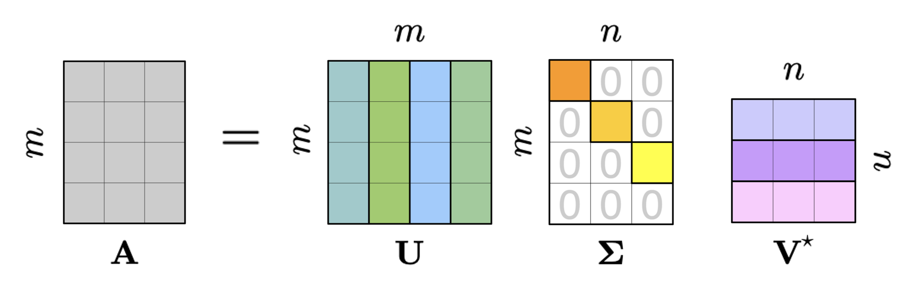
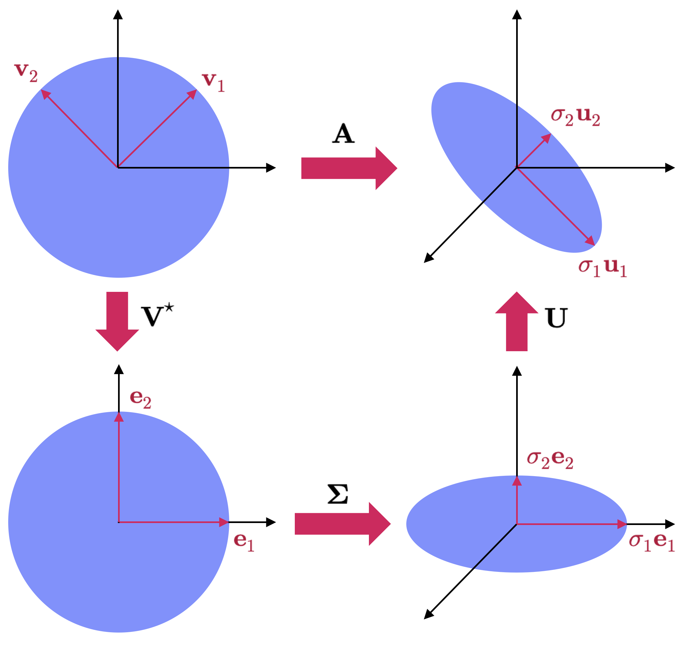
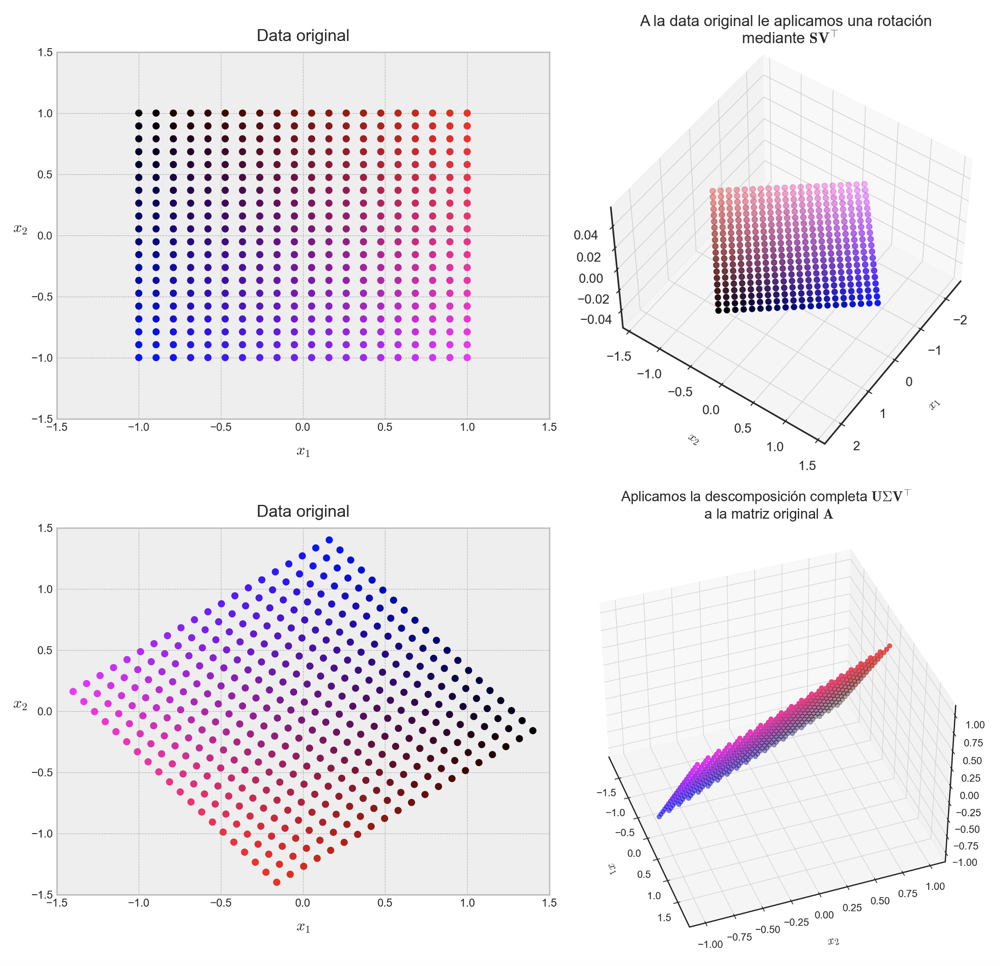
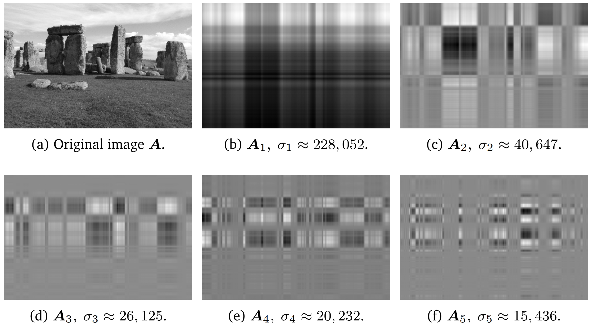
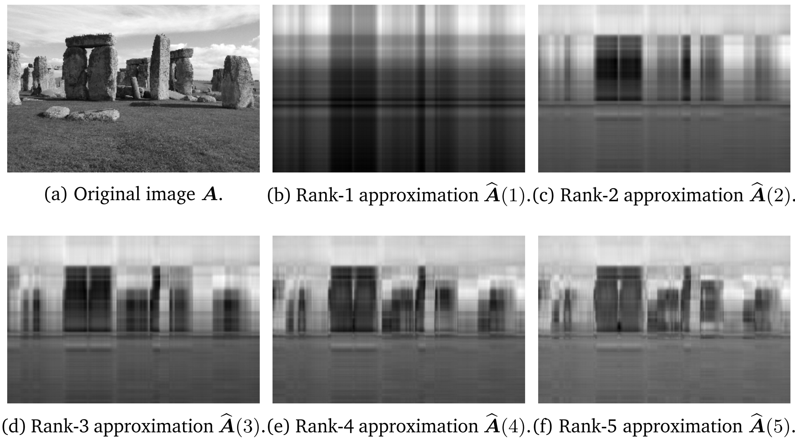
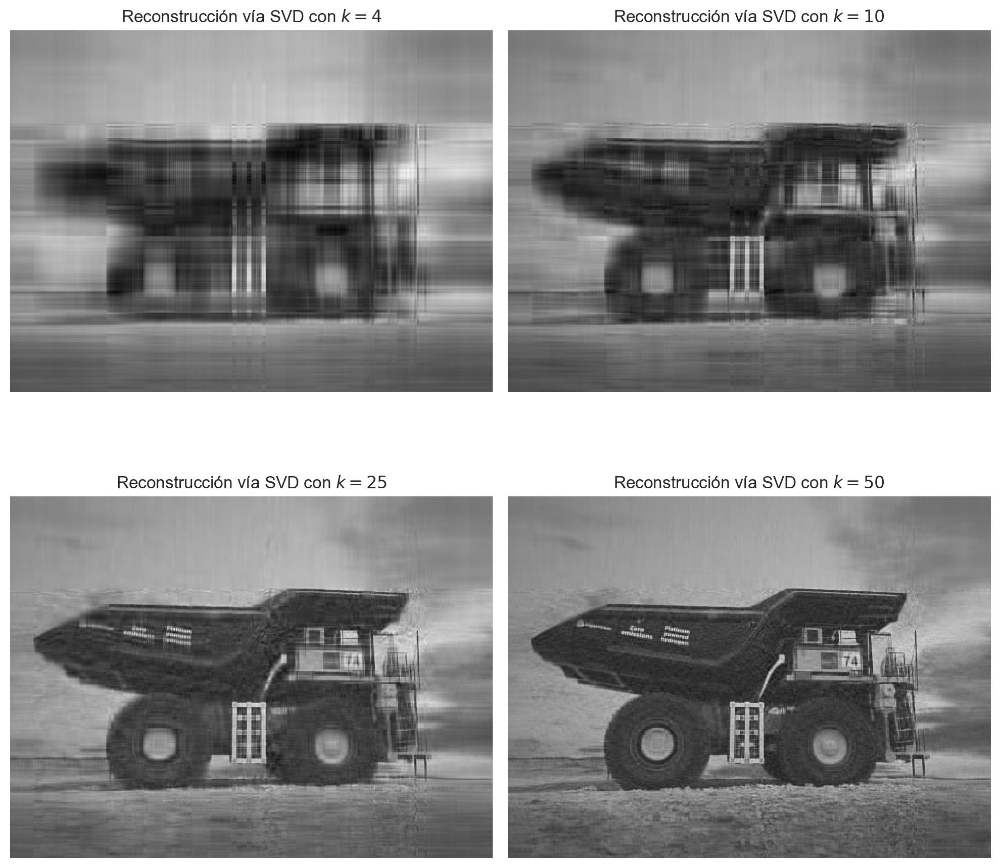

import numpy as npDescomposiciones matriciales
Factorización, estructura y compresión de información
ImportantIdea central
Las descomposiciones matriciales permiten expresar matrices como productos de matrices con estructura más simple. Esto facilita el análisis de transformaciones lineales, mejora la estabilidad numérica de muchos cálculos y abre la puerta a aplicaciones fundamentales en aproximación, compresión de información y aprendizaje automático.
Descomposición de Cholesky.
Como ya hemos revisado en los apuntes anteriores, existen varias formas de descomponer una matriz. Puntualmente, la diagonalización y la descomposición por formas nos han permitido reformular matrices que cumplen con ciertas condiciones en términos de productos de tres matrices.
A continuación vamos a estudiar una nueva descomposición conocida como factorización de Cholesky, la que nos permite descomponer una matriz \(\mathbf{A}\) que cumple igualmente algunas condiciones en el producto \(\mathbf{A}=\mathbf{L}\mathbf{L}^{\top}\), donde \(\mathbf{L}\) es una matriz triangular inferior cuya diagonal contiene números positivos. Sin embargo, para ello, es necesario que las matrices que queremos descomponer sean definidas positivas. Este concepto lo revisamos previamente, pero lo refinaremos a fin de considerar matrices definidas sobre cualquier cuerpo (\(\mathbb{R}\) o \(\mathbb{C}\)).
Definición 7.1 – Matriz definida positiva (otra vez…): Sea \(\mathbf{A}\in \mathbb{K}^{n\times n}\) una matriz hermítica. Diremos que \(\mathbf{A}\) es una matriz definida positiva si cumple con una (y, por tanto, con todas) de las siguientes formulaciones equivalentes:
- (F1): Para todos los vectores no nulos \(\mathbf{u}\in \mathbb{K}^{n}\), se tiene que \(\mathbf{u}^{\ast}\mathbf{A}\mathbf{u}\), donde \(\mathbf{u}^{\ast}\) es la matriz transpuesta conjugada de \(\mathbf{u}\).
- (F2): Todos los autovalores de \(\mathbf{A}\) son positivos.
- (F3): La función \(\left< \mathbf{u} ,\mathbf{v} \right> =\mathbf{v}^{\ast } \mathbf{A} \mathbf{u}\) define un producto interno en \(\mathbb{K}^{n}\).
Observamos, de las condiciones anteriores, que si \(\mathbf{A}\) es definida positiva, entonces \(\det(\mathbf{A})>0\) y su inversa \(\mathbf{A}^{-1}\) es también definida positiva.
Estamos pues en condiciones de formular el siguiente teorema.
TipTeorema 7.1 – Descomposición de Cholesky
Sea \(\mathbf{A}\in \mathbb{K}^{n\times n}\) una matriz simétrica y definida positiva. Entonces \(\mathbf{A}\) puede ser expresada como \(\mathbf{A}=\mathbf{L}\mathbf{L}^{\top}\), donde \(\mathbf{L}\) es una matriz triangular inferior con elementos positivos en su diagonal principal. Es decir,
\[ \mathbf{A} =\left( \begin{matrix}a_{11}&a_{12}&\cdots &a_{1n}\\ a_{21}&a_{22}&\cdots &a_{2n}\\ \vdots &\vdots &\ddots &\vdots \\ a_{n1}&a_{n2}&\cdots &a_{nn}\end{matrix} \right) =\left( \begin{matrix}l_{11}&0&\cdots &0\\ l_{21}&l_{22}&\cdots &0\\ \vdots &\vdots &\ddots &\vdots \\ l_{n1}&l_{n2}&\cdots &l_{nn}\end{matrix} \right) \left( \begin{matrix}l_{11}&l_{21}&\cdots &l_{n1}\\ 0&l_{22}&\cdots &l_{n2}\\ \vdots &\vdots &\ddots &\vdots \\ 0&0&\cdots &l_{nn}\end{matrix} \right) =\mathbf{L} \mathbf{L}^{\top } \tag{7.1} \]
La matriz \(\mathbf{L}\) se denomina factor de Cholesky de \(\mathbf{A}\), y es único.
Ejemplo 7.1: Consideremos una matriz simétrica y definida positiva \(\mathbf{A}\in \mathbb{R}^{3\times 3}\), definida como \(\mathbf{A} =\left\{ a_{ij}\right\}\), tal que
\[ \mathbf{A} =\left( \begin{matrix}a_{11}&a_{12}&a_{13}\\ a_{21}&a_{22}&a_{23}\\ a_{31}&a_{32}&a_{33}\end{matrix} \right) \tag{7.2} \]
Vamos a buscar una fórmula para determinar explícitamente los elementos del factor de Cholesky \(\mathbf{L}\) de \(\mathbf{A}\). En efecto, \(\mathbf{A}=\mathbf{L}\mathbf{L}^{\top}\), donde
\[ \mathbf{L} \mathbf{L}^{\top } =\left( \begin{matrix}l_{11}&0&0\\ l_{21}&l_{22}&0\\ l_{31}&l_{32}&l_{33}\end{matrix} \right) \left( \begin{matrix}l_{11}&l_{21}&l_{32}\\ 0&l_{22}&l_{32}\\ 0&0&l_{33}\end{matrix} \right) =\left( \begin{matrix}l^{2}_{11}&l_{21}l_{11}&l_{31}l_{11}\\ l_{21}l_{31}&l^{2}_{21}+l^{2}_{22}&l_{31}l_{21}+l_{32}l_{22}\\ l_{31}l_{11}&l_{31}l_{21}+l_{32}l_{22}&l^{2}_{31}+l^{2}_{32}+l^{2}_{33}\end{matrix} \right) \tag{7.3} \]
Comparando el lado derecho de la ecuación (7.2) con el lado derecho de la ecuación (3.175), podemos observar que existe un sencillo patrón en los elementos de la diagonal principal de \(\mathbf{L}\). En efecto,
\[ l_{11}=\sqrt{a_{11}} \ ;\ l_{22}=\sqrt{a_{22}-l^{2}_{21}} \ ;\ l_{33}=\sqrt{a_{33}-\left( l^{2}_{31}+l^{2}_{32}\right) } \tag{7.4} \]
Similarmente, para los elementos ubicados debajo de la diagonal principal de \(\mathbf{L}\) (\(l_{ij}\), donde \(i>j\)), también se observa un patrón,
\[ l_{21}=\frac{1}{l_{11}} a_{21}\ ;\ l_{31}=\frac{1}{l_{11}} a_{31}\ ;\ l_{32}=\frac{1}{l_{22}} \left( a_{32}-l_{31}l_{21}\right) \tag{7.5} \]
De esta manera, en términos más generales, para una matriz \(\mathbf{A}\in \mathbb{R}^{n\times n}\), podemos probar (por inducción) que:
- Para los elementos de la diagonal principal: \(l_{ii}=a_{ii}-\sum^{i-1}_{k=1} l^{2}_{ik}\).
- Para el resto de los elementos: \(l_{ij}=\frac{1}{l_{jj}} \left( a_{ij}-\sum^{j-1}_{k=1} l_{ik}l_{jk}\right) ;\forall i>j\).
◼︎
Ejemplo 7.2: En Numpy es posible obtener una descomposición de Cholesky fácilmente por medio de la función cholesky(), cuya dependencia es igualmente el módulo numpy.linalg. Esta función simplemente requiere, como argumento, un arreglo bidimensional que represente a una matriz definida positiva. Por ejemplo:
# Definimos nuestra matriz A.
A = np.array([
[2, 2, 1],
[2, 3, 0],
[1, 0, 2],
])
# Mostramos en pantalla esta matriz.
Aarray([[2, 2, 1],
[2, 3, 0],
[1, 0, 2]])# Calculamos su factorización de Cholesky.
L = np.linalg.cholesky(A)
# Mostramos la matriz L en pantalla.
Larray([[ 1.41421356, 0. , 0. ],
[ 1.41421356, 1. , 0. ],
[ 0.70710678, -1. , 0.70710678]])Es posible verificar que la descompisición obtenida efectivamente genera la matriz original A, realizando la operación \(\mathbf{L}\mathbf{L}^{\top}\). En efecto,
# Verificamos que la descomposición efectivamente genera la matriz A.
np.allclose(A, L @ L.T)TruePor supuesto, la factorización de Cholesky exige que las matrices a descomponer sean definidas positivas. En Numpy esta no es una excepción, y se levantará un error de tipo LinAlgError si esta condición no se cumple al intentar implementar una decomposición de Cholesky:
# Definimos una matriz arbitraria.
rng = np.random.default_rng(seed=42)
B = rng.integers(low=-6, high=6, size=(4, 4))
Barray([[-5, 3, 1, -1],
[-1, 4, -5, 2],
[-4, -5, 0, 5],
[ 2, 3, 2, 3]])# Si intentamos calcular su descomposición de Cholesky, se levantará un error, ya que no es
# definida positiva.
try:
L = np.linalg.cholesky(B)
except np.linalg.LinAlgError as e:
print(e)Matrix is not positive definite◼︎
La descomposición de Cholesky es una herramienta importante en el cálculo numérico subyacente a los algoritmos de aprendizaje. Las matrices simétricas y definidas positivas, con frecuencia, requieren de intensivas manipulaciones para llegar a valores de interés en muchos problemas estadísticos. Por ejemplo, la matriz de covarianza asociada a un vector de variables aleatorias distribuidas normalmente cumple con estas condiciones. La descomposición de Cholesky de esta matriz de covarianza nos permite generar muestreos desde una distribución Gaussiana. También nos permite construir transformaciones lineales de variables aleatorias, lo que se explota enormemente al calcular gradientes en modelos estocásticos de gran profundidad, tales como los auto-enconders de tipo variacionales (Jimenez Rezende et al., 2014; Kingma & Weilling., 2014).
La descomposición de Cholesky también nos permite calcular determinantes de manera eficiente. Dada la factorización \(\mathbf{A}=\mathbf{L}\mathbf{L}^{\top}\), sabemos que \(\det(\mathbf{A})=\det(\mathbf{L}) \det(\mathbf{L}^{\top})=\det(\mathbf{L})^{2}\). Ya que \(\mathbf{L}\) es una matriz triangular, el determinante de \(\mathbf{L}\) es simplemente el producto de los elementos de la diagonal principal. Por esta razón, muchos paquetes computacionales (y, en varios casos, librerías de Python) utilizan la descomposición de Cholesky para facilitar cálculos que involucran matrices (siempre que sean definidas positivas).
Descomposición QR.
Otro tipo de descomposición muy común en álgebra lineal y, puntualmente, en machine learning (sobretodo por el aumento en la eficiencia de ciertos cálculos matriciales), corresponde a la descomposición QR. Tal descomposición es válida para cualquier matriz \(\mathbf{A}\in \mathbb{K}^{n\times n}\), y es tal que \(\mathbf{A}=\mathbf{Q}\mathbf{R}\), donde \(\mathbf{Q}\) es una matriz ortogonal o unitaria (recordemos que toda matriz \(\mathbf{Q}\in \mathbb{K}^{n\times n}\) que satisface la expresión \(\mathbf{Q}^{\top}\mathbf{Q}=\mathbf{I}_{n}\) se denomina ortogonal o unitaria) y \(\mathbf{R}\) es una matriz triangular superior. Si \(\mathbf{A}\) es, además, no singular (y, por tanto, invertible), entonces la descomposición QR es única siempre que los elementos de la diagonal principal de \(\mathbf{R}\) sean todos positivos.
La construcción de la factorización QR puede hacerse de varias formas, siendo la más usual el uso de proyecciones ortogonales y del proceso de ortogonalización de Gram-Schmidt. Para ello, consideremos este último proceso aplicado a las columnas de una matriz no singular, digamos \(\mathbf{A}=(\mathbf{a}_{1},...,\mathbf{a}_{n})\), donde \(\mathbf{a}_{j} =\left\{ a_{ij}\right\}\) para \(i=1,...,n\), y definimos el producto interno usual \(\left< \mathbf{v} ,\mathbf{w} \right> =\mathbf{v}^{\ast } \mathbf{w}\). Definimos además la proyección ortogonal
\[ \pi_{\mathbf{u} } \left( \mathbf{a} \right) =\frac{\left< \mathbf{u} ,\mathbf{a} \right> }{\left< \mathbf{u} ,\mathbf{u} \right> } \mathbf{u} =\frac{\left< \mathbf{u} ,\mathbf{a} \right> }{\left\Vert \mathbf{u} \right\Vert^{2} } \mathbf{u} \tag{7.6} \]
Entonces, usando el método de Gram-Schmidt, obtenemos
\[ \begin{array}{lll}\mathbf{u}_{1} &=&\mathbf{a}_{1} \ ;\ \mathbf{e}_{1} =\frac{\mathbf{u}_{1} }{\left\Vert \mathbf{u}_{1} \right\Vert^{2} } \\ \mathbf{u}_{2} &=&\mathbf{a}_{2} -\pi_{\mathbf{u}_{1} } \left( \mathbf{a}_{2} \right) \ ;\ \mathbf{e}_{2} =\frac{\mathbf{u}_{2} }{\left\Vert \mathbf{u}_{2} \right\Vert^{2} } \\ \mathbf{u}_{3} &=&\mathbf{a}_{3} -\pi_{\mathbf{u}_{1} } \left( \mathbf{a}_{3} \right) -\pi_{\mathbf{u}_{2} } \left( \mathbf{a}_{3} \right) \ ;\ \mathbf{e}_{3} =\frac{\mathbf{u}_{3} }{\left\Vert \mathbf{u}_{3} \right\Vert^{2} } \\ \vdots &\vdots &\vdots \\ \mathbf{u}_{k} &=&\mathbf{a}_{k} -\sum^{k-1}_{j=1} \pi_{\mathbf{u}_{j} } \left( \mathbf{a}_{k} \right) \ ;\ \mathbf{e}_{k} =\frac{\mathbf{u}_{k} }{\left\Vert \mathbf{u}_{k} \right\Vert^{2} } \end{array} \tag{7.7} \]
Podemos expresar las columnas \(\mathbf{a}_{k}\) sobre nuestra nueva base ortonormal, recién calculada, como
\[ \mathbf{R} =\left( \begin{array}{rrrrr}\left< \mathbf{e}_{1} ,\mathbf{a}_{1} \right> &\left< \mathbf{e}_{1} ,\mathbf{a}_{2} \right> &\left< \mathbf{e}_{1} ,\mathbf{a}_{3} \right> &\cdots &\left< \mathbf{e}_{1} ,\mathbf{a}_{n} \right> \\ 0&\left< \mathbf{e}_{2} ,\mathbf{a}_{2} \right> &\left< \mathbf{e}_{2} ,\mathbf{a}_{3} \right> &\cdots &\left< \mathbf{e}_{2} ,\mathbf{a}_{n} \right> \\ 0&0&\left< \mathbf{e}_{3} ,\mathbf{a}_{3} \right> &\cdots &\left< \mathbf{e}_{3} ,\mathbf{a}_{n} \right> \\ \vdots &\vdots &\vdots &\ddots &\vdots \\ 0&0&0&\cdots &\left< \mathbf{e}_{n} ,\mathbf{a}_{n} \right> \end{array} \right) \tag{7.8} \]
Donde \(\left< \mathbf{e}_{i} ,\mathbf{a}_{k} \right> =\left\Vert \mathbf{u}_{i} \right\Vert\). Podemos escribir el desarrollo (7.8) en forma matricial como \(\mathbf{A}=\mathbf{Q}\mathbf{R}\), donde \(\mathbf{Q}=(\mathbf{e}_{1},...,\mathbf{e}_{n})\) y
\[ \begin{array}{lll}\mathbf{a}_{1} &=&\left< \mathbf{e}_{1} ,\mathbf{a}_{1} \right> \mathbf{e}_{1} \\ \mathbf{a}_{2} &=&\left< \mathbf{e}_{1} ,\mathbf{a}_{2} \right> \mathbf{e}_{1} +\left< \mathbf{e}_{2} ,\mathbf{a}_{2} \right> \mathbf{e}_{2} \\ \mathbf{a}_{3} &=&\left< \mathbf{e}_{1} ,\mathbf{a}_{3} \right> \mathbf{e}_{1} +\left< \mathbf{e}_{2} ,\mathbf{a}_{2} \right> \mathbf{e}_{2} +\left< \mathbf{e}_{3} ,\mathbf{a}_{3} \right> \mathbf{e}_{3} \\ \vdots &\vdots &\vdots \\ \mathbf{a}_{k} &=&\sum^{k}_{j=1} \left< \mathbf{e}_{j} ,\mathbf{a}_{k} \right> \mathbf{e}_{j} \end{array} \tag{7.9} \]
Ejemplo 7.3: Consideremos la matriz
\[ \mathbf{A} =\left( \begin{matrix}1&1&0\\ 1&0&1\\ 0&1&1\end{matrix} \right) \in \mathbb{R}^{3\times 3} \tag{7.10} \]
Notemos que podemos reescribir la matriz \(\mathbf{A}\) con un arreglo de vectores columna del tipo \(\mathbf{A}=(\mathbf{a}_{1},\mathbf{a}_{2},\mathbf{a}_{3})\), donde
\[ \mathbf{a}_{1} =\left( \begin{matrix}1\\ 1\\ 0\end{matrix} \right) \ ;\ \mathbf{a}_{2} =\left( \begin{matrix}1\\ 0\\ 1\end{matrix} \right) \ ;\ \mathbf{a}_{3} =\left( \begin{matrix}0\\ 1\\ 1\end{matrix} \right) \tag{7.11} \]
Dado que estos vectores son linealmente independientes en \(\mathbb{R}^{3}\), podemos construir un conjunto ortonormal de los mismos mediante el proceso de Gram-Schmidt. De esta manera tenemos que
\[ \begin{array}{lll}\mathbf{u}_{1} &=&\left( \begin{matrix}1\\ 1\\ 0\end{matrix} \right) \\ \mathbf{e}_{1} &=&\displaystyle \frac{\left( \begin{matrix}1\\ 1\\ 0\end{matrix} \right) }{\left\Vert \left( \begin{matrix}1\\ 1\\ 0\end{matrix} \right) \right\Vert } =\displaystyle \frac{1}{\sqrt{2} } \left( \begin{matrix}1\\ 1\\ 0\end{matrix} \right) =\left( \begin{array}{r}\displaystyle \frac{1}{\sqrt{2} } \\ \displaystyle \frac{1}{\sqrt{2} } \\ 0\end{array} \right) \\ \mathbf{u}_{2} &=&\left( \begin{matrix}1\\ 0\\ 1\end{matrix} \right) -\displaystyle \frac{1}{\sqrt{2} } \left( \begin{array}{r}\displaystyle \frac{1}{\sqrt{2} } \\ \displaystyle \frac{1}{\sqrt{2} } \\ 0\end{array} \right) =\left( \begin{array}{r}\displaystyle \frac{1}{2} \\ -\displaystyle \frac{1}{2} \\ 1\end{array} \right) \\ \mathbf{e}_{2} &=&\displaystyle \frac{\left( \begin{array}{r}\displaystyle \frac{1}{2} \\ -\displaystyle \frac{1}{2} \\ 1\end{array} \right) }{\left\Vert \left( \begin{array}{r}\displaystyle \frac{1}{2} \\ -\displaystyle \frac{1}{2} \\ 1\end{array} \right) \right\Vert } =\displaystyle \frac{1}{\sqrt{3/2} } \left( \begin{array}{r}\displaystyle \frac{1}{2} \\ -\displaystyle \frac{1}{2} \\ 1\end{array} \right) =\left( \begin{array}{r}\displaystyle \frac{1}{\sqrt{6} } \\ -\displaystyle \frac{1}{\sqrt{6} } \\ \displaystyle \frac{2}{\sqrt{6} } \end{array} \right) \\ \mathbf{u}_{3} &=&\left( \begin{matrix}1\\ 0\\ 1\end{matrix} \right) -\displaystyle \frac{1}{\sqrt{2} } \left( \begin{array}{r}\displaystyle \frac{1}{\sqrt{2} } \\ \displaystyle \frac{1}{\sqrt{2} } \\ 0\end{array} \right) -\displaystyle \frac{1}{\sqrt{6} } \left( \begin{array}{r}\displaystyle \frac{1}{\sqrt{6} } \\ -\displaystyle \frac{1}{\sqrt{6} } \\ \displaystyle \frac{2}{\sqrt{6} } \end{array} \right) =\left( \begin{array}{r}-\displaystyle \frac{1}{\sqrt{3} } \\ \displaystyle \frac{1}{\sqrt{3} } \\ \displaystyle \frac{1}{\sqrt{3} } \end{array} \right) \\ \mathbf{e}_{3} &=&\displaystyle \frac{\left( \begin{array}{r}-\displaystyle \frac{1}{\sqrt{3} } \\ \displaystyle \frac{1}{\sqrt{3} } \\ \displaystyle \frac{1}{\sqrt{3} } \end{array} \right) }{\left\Vert \left( \begin{array}{r}-\displaystyle \frac{1}{\sqrt{3} } \\ \displaystyle \frac{1}{\sqrt{3} } \\ \displaystyle \frac{1}{\sqrt{3} } \end{array} \right) \right\Vert } =\left( \begin{array}{r}-\displaystyle \frac{1}{\sqrt{3} } \\ \displaystyle \frac{1}{\sqrt{3} } \\ \displaystyle \frac{1}{\sqrt{3} } \end{array} \right) \end{array} \tag{7.12} \]
De esta manera,
\[ \mathbf{Q} =\left( \mathbf{e}_{1} ,\mathbf{e}_{2} ,\mathbf{e}_{2} \right) =\left( \begin{array}{rrr}\frac{1}{\sqrt{2} } &\frac{1}{\sqrt{6} } &-\frac{1}{\sqrt{3} } \\ \frac{1}{\sqrt{2} } &-\frac{1}{\sqrt{6} } &\frac{1}{\sqrt{3} } \\ 0&\frac{2}{\sqrt{6} } &\frac{1}{\sqrt{3} } \end{array} \right) \wedge \mathbf{R} =\left( \begin{matrix}\left< \mathbf{u}_{1} ,\mathbf{e}_{1} \right> &\left< \mathbf{u}_{2} ,\mathbf{e}_{1} \right> &\left< \mathbf{u}_{3} ,\mathbf{e}_{1} \right> \\ 0&\left< \mathbf{u}_{2} ,\mathbf{e}_{2} \right> &\left< \mathbf{u}_{3} ,\mathbf{e}_{2} \right> \\ 0&0&\left< \mathbf{u}_{3} ,\mathbf{e}_{3} \right> \end{matrix} \right) =\left( \begin{array}{rrr}\frac{2}{\sqrt{2} } &\frac{1}{\sqrt{2} } &\frac{1}{\sqrt{2} } \\ 0&\frac{3}{\sqrt{6} } &\frac{1}{\sqrt{6} } \\ 0&0&\frac{2}{\sqrt{3} } \end{array} \right) \tag{7.13} \]
◼︎
Ejemplo 7.4: En Numpy existe igualmente una implementación de la descomposición QR mediante el uso de la función qr(), también dependiente del módulo numpy.linalg. Sólo se requiere como entrada la matriz de interés:
# Definimos una matriz arbitraria de 4x4.
A = rng.integers(low=-5, high=5, size=(4, 4))
# Mostramos nuestra matriz en pantalla.
Aarray([[ 0, -4, 3, -1],
[ 0, -2, -4, 4],
[ 2, 1, -1, 3],
[ 0, -1, -1, -3]])# Calculamos la descomposición QR de la matriz A.
Q, R = np.linalg.qr(A)# Mostramos en pantalla la matriz Q.
Qarray([[ 0. , -0.87287156, 0.48025665, -0.08630637],
[-0. , -0.43643578, -0.84751173, -0.3020723 ],
[-1. , 0. , 0. , 0. ],
[-0. , -0.21821789, -0.22600313, 0.94937007]])# Mostramos en pantalla la matriz R.
Rarray([[-2. , -1. , 1. , -3. ],
[ 0. , 4.58257569, -0.65465367, -0.21821789],
[ 0. , 0. , 5.05682001, -3.19229419],
[ 0. , 0. , 0. , -3.97009304]])# Comprobamos que la descomposición así definida efectivamente genera la matriz A.
np.allclose(A, Q @ R)True◼︎
Descomposición en valores singulares.
Procedemos ahora a revisar el último tópico relativo a la descomposición matricial con uno de los resultados más importantes del álgebra lineal, conocido como descomposición en valores singulares (comúnmente llamada SVD, del inglés singular value decomposition). Corresponde a una generalización de la descomposición por autovalores y autovectores (diagonalización) y permite factorizar cualquier matriz \(\mathbf{A}\in \mathbb{K}^{m\times n}\), incluso aunque \(\mathbf{A}\) no sea una matriz cuadrada (\(m\neq n\)).
Específicamente, la descomposición SVD de una matriz \(\mathbf{A}\in \mathbb{K}^{m\times n}\) es una factorización de la forma \(\mathbf{A}=\mathbf{U}\mathbf{\Sigma}\mathbf{V}^{\ast}\), donde \(\mathbf{U}\) es una matriz ortogonal de \(m\times m\) (es decir, \(\mathbf{U}^{\ast}=\mathbf{U}^{-1}\)) con elementos no negativos en su diagonal, $ $ es una matriz ortogonal de \(n\times n\) y \(\mathbf{V}^{\ast}\) es la matriz transpuesta conjugada de \(\mathbf{V}\). Si \(\mathbf{A}\) tiene solo elementos en \(\mathbb{R}\), la descomposición SVD se reduce a una del tipo \(\mathbf{A}=\mathbf{U}\mathbf{\Sigma}\mathbf{V}^{\top}\).
Los elementos diagonales de \(\Sigma\), que denotamos como \(\sigma_{i} =\left\{ \psi_{ij} \right\}\), son determinadas unívocamente por la matriz \(\mathbf{A}\) y son llamados valores singulares de \(\mathbf{A}\). El número de valores singulares no nulos es igual al rango de la matriz \(\mathbf{A}\). Las columnas de \(\mathbf{U}\) y las columnas de \(\mathbf{V}\) son llamadas vectores singulares por la izquierda (siniestrales) y vectores singulares por la derecha (dextrales), respectivamente, de \(\mathbf{A}\). Entre ambos constituyen dos conjuntos de bases ortonormales \(\left\{ \mathbf{u}_{1} ,...,\mathbf{u}_{m} \right\} \wedge \left\{ \mathbf{v}_{1} ,...,\mathbf{v}_{m} \right\}\), lo que permite que la descomposición SVD pueda escribirse de forma explícita como
\[ \mathbf{A} =\sum^{r}_{i=1} \sigma_{i} \mathbf{u}_{i} \mathbf{v}^{\ast }_{i} \ ;\ r\leq \rho \left( \mathbf{A} \right) =\min \left\{ m,n\right\} \tag{7.14} \]
donde \(\rho(\mathbf{A})\) es el rango de \(\mathbf{A}\).
La descomposición SVD no es única. Sin embargo, siempre es posible escoger una tal que los valores singulares \(\sigma_{i}\) se presenten en un orden decreciente. En este caso, la matriz \(\mathbf{\Sigma}\) sí es única y es determinada completamente por \(\mathbf{A}\) (pero no \(\mathbf{U}\) ni \(\mathbf{V}\)).
Antes de comenzar a estudiar en detalle esta descomposición, vamos a definirla por medio de un teorema (aunque, para efectos prácticos, trabajaremos con matrices cuyos elementos son números reales).
TipTeorema 7.2 – Descomposición en valores singulares
Sea \(\mathbf{A}\in \mathbb{R}^{m\times n}\) una matriz rectangular de rango \(\rho(\mathbf{A})\in [0, \min \left\{ m,n\right\}]\). La descomposición en valores singulares de \(\mathbf{A}\) tiene la forma (esquemática) mostrada en la Figure 1

Donde \(\mathbf{U}\in \mathbb{R}^{m\times m}\) es una matriz ortogonal con columnas \(\mathbf{u}_{i}, i=1,...,m\), y \(\mathbf{V}\in \mathbb{R}^{n\times n}\) es una matriz ortogonal con columnas \(\mathbf{v}_{j}, j=1,...,n\). La matriz de valores singulares \(\mathbf{\Sigma } =\left\{ \psi_{ij} \right\} \in \mathbb{R}^{m\times n}\) tiene las mismas dimensiones que \(\mathbf{A}\), y es tal que \(psi_{ij}=0\) para \(i\neq j\).
Como comentamos en un principio, la matriz de valores singulares \(\mathbf{\Sigma}\), bajo ciertas condiciones, es única, pero requiere cierto nivel de atención. Observemos que \(\mathbf{\Sigma}\) tiene la misma dimensión que \(\mathbf{A}\). Esto significa que \(\mathbf{\Sigma}\) contiene una submatriz diagonal con los valores singulares de \(\mathbf{A}\) con un relleno de ceros en las filas o columnas siguientes (lo que, en computación científica, se conoce como zero padding). Específicamente, si \(m>n\), entonces la matriz \(\mathbf{\Sigma}\) tiene una estructura diagonal hasta la fila \(n\) y luego consiste de vectores fila del tipo \(\mathbf{0}^{\top}\) hasta la fila \(m\). Es decir,
\[ \mathbf{\Sigma } =\left( \begin{matrix}\sigma_{1} &0&\cdots &0\\ 0&\sigma_{2} &\cdots &0\\ \vdots &\vdots &\ddots &\vdots \\ 0&0&\cdots &\sigma_{n} \\ \vdots &\vdots &\ddots &\vdots \\ 0&0&\cdots &0\end{matrix} \right) \tag{7.15} \]
Por otro lado, si \(m<n\), entonces la matriz \(\mathbf{\Sigma}\) tiene una estructura diagonal hasta la columna \(m\) y nula hasta la posición \(n\). Es decir,
\[ \mathbf{\Sigma } =\left( \begin{matrix}\sigma_{1} &0&\cdots &0&\cdots &0\\ 0&\sigma_{2} &\cdots &0&\cdots &0\\ \vdots &\vdots &\ddots &\vdots &\ddots &\vdots \\ 0&0&\cdots &\sigma_{m} &\cdots &0\end{matrix} \right) \tag{7.16} \]
Una primera explicación geométrica.
La descomposición SVD nos ofrece una interpretación geométrica intuitiva y muy interesante que nos permite describir este procedimiento antes de entrar en el detalle matemático del mismo. En lo que sigue, discutiremos esta descomposición en base a una secuencia de transformaciones lineales aplicadas sobre ciertas bases del conjunto de matrices de interés. Luego, por medio de un ejemplo, aplicaremos estas transformaciones a un conjunto de vectores en ℝ^2, lo que nos permitirá observar el efecto de cada una, en términos geométricos, de manera más clara.
La descomposición SVD de una matriz puede ser interpretada como una que involucra a tres transformaciones lineales asociadas a las correspondientes matrices, digamos del tipo \(T:\mathbb{R}^{n}\longrightarrow \mathbb{R}^{n}\), como se muestra en la Figure 2. En términos muy generales, la descomposición SVD realiza un cambio de base mediante el uso de la matriz \(\mathbf{V}^{\ast}\), seguido de un escalamiento y aumento (o reducción) de su dimensión mediante el uso de la matriz de valores singulares \(\mathbf{\Sigma}\). Finalmente, se realiza un segundo cambio de base por medio de la matriz \(\mathbf{U}\). Por supuesto, esta secuencia de operaciones guarda mucho más detalles matemáticos que revisaremos más adelante. Pero antes, refinaremos esta interpretación geométrica poniéndole nombre a nuestras operaciones.

Asumamos que disponemos de una matriz de cambio de base asociada a una transformación lineal \(T:\mathbb{R}^{n}\longrightarrow \mathbb{R}^{m}\) con respecto a las bases canónicas \(\mathbf{e}(n)\) y \(\mathbf{e}(m)\), respectivamente. Además, consideremos dos bases más, digamos \(\alpha\) y \(\beta\), para \(\mathbb{R}^{n}\) y \(\mathbb{R}^{m}\), respectivamente. Entonces:
(P1): La matriz \(\mathbf{V}\) realiza un cambio de base en el dominio \(\mathbb{R}^{n}\) desde la base \(\alpha\) (representada por los vectores rojos \(\mathbf{v}_{1}\) y \(\mathbf{v}_{2}\) en la Figure 2, panel superior izquierdo) a la base canónica \(\mathbf{e}(n)\). Por lo tanto, podemos escribir \(\mathbf{V}^{\ast}=[I]_{\alpha}^{\mathbf{e}(n)}\), lo que implica que el resultado de esta operación es el alineamiento de estos vectores con los ejes del sistema \(\mathbb{R}^{m}\) (lo que se observa en el panel inferior izquierdo de la Figure 2).
(P2): Habiendo cambiado la base de nuestras coordenadas a la referencia canónica de \(\mathbb{R}^{m}\), la matriz \(\mathbf{\Sigma}\) escala las nuevas coordenadas con respecto a los valores singulares \(\sigma_{i}\) (y añade o quita dimensiones); es decir, \(\mathbf{\Sigma}\) es la matriz de cambio de base de \(T\) con respecto a \(\alpha\) y \(\beta\) (es decir, \(\mathbf{\Sigma}=[I]_{\alpha}^{\beta}\)), representada por los vectores rojos ubicados en el sistema \((\mathbf{e}_{1},\mathbf{e}_{2})\), los que además son modificados en su longitud. En sistema completo \((\mathbf{e}_{1},\mathbf{e}_{2})\) ahora se encuentra inmerso en otro de mayor dimensión, como se observa en el panel inferior derecho de la Figure 2.
(P3): La matriz \(\mathbf{U}\) realiza un cambio de base en codominio \(\mathbb{R}^{m}\) desde la base \(\beta\) a la base canónica \(\mathbf{e}(m)\) (es decir, \(\mathbf{U}=[I]_{\beta}^{\mathbf{e}(m)}\)), y que se representa por medio de una rotación de los vectores rojos en el gráfico del panel superior derecho de la Figure 2 fuera del sistema \((\mathbf{e}_{1},\mathbf{e}_{2})\).
La descomposición SVD representa un cambio de base en ambos, dominio y codominio de la transformación lineal \(T\). Esto es distinto a lo que ocurre en la descomposición por autovalores y autovectores (diagonalización), porque ésta opera siempre en el mismo espacio vectorial, donde se aplica siempre un cambio de base que luego se deshace mediante un cambio de base inverso. Lo que hace especial a la descomposición SVD, es que estas dos bases distintas están enlazadas simultáneamente a la matriz de valores singulares \(\mathbf{\Sigma}\).
Ejemplo 7.4: Consideremos una transformación lineal que aplica una grilla cuadrada de vectores \(\mathcal{X}\in \mathbb{R}^{2}\) que caben en una caja de tamaño \(2\times 2\) centrada en el origen. Usando la base canónica de \(\mathbb{R}^{2}\), operamos sobre estos vectores usando las siguientes identidades:
\[ \mathbf{A} =\left( \begin{matrix}1&-0.8\\ 0&1\\ 1&0\end{matrix} \right) =\mathbf{U} \mathbf{\Sigma } \mathbf{V}^{\top } =\left( \begin{matrix}-0.79&0&-0.62\\ 0.38&-0.78&-0.49\\ -0.48&-0.62&0.62\end{matrix} \right) \left( \begin{matrix}1.62&0\\ 0&1\\ 0&0\end{matrix} \right) \left( \begin{matrix}-0.78&0.62\\ -0.62&-0.78\end{matrix} \right) \tag{7.17} \]
Partimos con un conjunto de vectores \(\mathcal{X}\) que son representados, en el panel superior izquierdo de la Figure 3, como puntos coloreados (desde magenta a azul) arreglados en una grilla. Luego aplicamos \(\mathbf{V}^{\top}\in \mathbb{R}^{2\times 2}\), lo que genera una rotación de \(\mathcal{X}\), lo que se muestra en el panel inferior izquierdo de la Figure 3. Ahora transformamos estos vectores por medio de la matriz de valores singulares \(\mathbf{\Sigma}\) desde el dominio \(\mathbb{R}^{2}\) al codominio \(\mathbb{R}^{3}\), como se observa en el panel inferior derecho de la Figure 3. Notemos que todos los vectores \(\mathcal{X}\) se ubican en el plano \((x_{1},x_{2})\). La tercera coordenada es siempre igual a cero, y los vectores en el plano \((x_{1},x_{2})\) son escalados por los valores singulares presentes en la diagonal de \(\mathbf{\Sigma}\).
La transformación de los vectores \(\mathcal{X}\) por medio de \(\mathbf{A}\) al codominio \(\mathbb{R}^{3}\) se iguala a la transformación de \(\mathcal{X}\) por medio de la descomposición \(\mathbf{U}\mathbf{\Sigma}\mathbf{V}^{\top}\), donde \(\mathbf{U}\) aplica una rotación en el codominio \(\mathbb{R}^{3}\), de manera tal que los vectores sobre los cuales operamos mediante esta transformación ya no están restringidos al sistema \((x_{1},x_{2})\), aunque siguen residiendo en un plano, como se observa en el panel superior derecho de la Figure 3.

◼︎
Construcción de la descomposición en valores singulares.
A continuación, discutiremos las condiciones de existencia de la descomposición en valores singulares y mostraremos cómo calcularla en detalle. Esta descomposición comparte ciertas similitudes con la diagonalización de matrices hermíticas, ya que
\[ \mathbf{S} =\mathbf{S}^{\top } =\mathbf{P} \mathbf{D} \mathbf{P}^{-1} \tag{7.18} \]
Donde \(\mathbf{S}\in \mathbb{R}^{n\times n}\) es una matriz hermítica. La correspondiente descomposición en valores singulares es
\[ \mathbf{S} =\mathbf{U} \mathbf{\Sigma } \mathbf{V}^{\ast } \tag{7.19} \]
Si ponemos \(\mathbf{U}=\mathbf{P}=\mathbf{V}\) y \(\mathbf{D}=\mathbf{\Sigma}\), podemos concluir que la descomposición en valores singulares de matrices hermíticas es equivalente a su descomposición diagonal.
A continuación, discutiremos las condiciones bajo las cuales el Teorema (7.2) se cumple y cómo construimos la descomposición SVD. El cálculo de esta descomposición para una matriz \(\mathbf{A}\in \mathbb{R}^{m\times n}\) es equivalente a encontrar dos conjuntos de bases ortonormales \(\alpha =\left\{ \mathbf{u}_{1} ,...,\mathbf{u}_{m} \right\} \wedge \beta =\left\{ \mathbf{v}_{1} ,...,\mathbf{v}_{n} \right\}\) relativos al dominio \(\mathbb{R}^{m}\) y al codominio \(\mathbb{R}^{n}\), respectivamente. A partir de estas bases, construimos las matrices \(\mathbf{U}\) y \(\mathbf{V}\). Para ello, será necesario que establezcamos primero un teorema esencial en la construcción de la descomposición SVD.
TipTeorema 7.3
Sea \(\mathbf{A}\in \mathbb{R}^{m\times n}\) una matriz no singular. Entonces siempre podremos definir una matriz simétrica y semi-definida positiva \(\mathbf{S}\in \mathbb{R}^{n\times n}\), a partir de \(\mathbf{A}\), como
\[ \mathbf{S} :=\mathbf{A}^{\top } \mathbf{A} \tag{7.20} \]
Nuestro plan es comenzar construyendo el conjunto ortonormal de vectores singulares por la derecha \(\beta =\left\{ \mathbf{v}_{1} ,...,\mathbf{v}_{n} \right\} \in \mathbb{R}^{n}\). Luego construiremos el conjunto de vectores singulares por la izquierda \(\alpha =\left\{ \mathbf{u}_{1} ,...,\mathbf{u}_{m} \right\} \in \mathbb{R}^{m}\). A continuación, enlazaremos ambos conjuntos con el requerimiento de la ortogonalidad de \(\beta\) se preserve conforme la transformación de \(\mathbf{A}\). Esto último es importante porque sabemos de antemano que las imágenes \(\mathbf{A}\mathbf{v}_{i}\) conforman un conjunto ortogonal de vectores. Luego normalizaremos estas imágenes por medio de factores de escalamiento, los que, por supuesto, resultarán ser los valores singulares de \(\mathbf{A}\).
Partimos entonces construyendo los vectores singulares por la derecha. El teorema de descomposición espectral nos dice que los autovectores de una matriz simétrica conforman una base ortonormal, lo que implica, por supuesto, que dicha matriz es diagonalizable. Además, del teorema (7.3), sabemos que siempre podemos construir una matriz simétrica y semi-definida positiva \(\mathbf{A}^{\top}\mathbf{A}\in \mathbb{R}^{n\times n}\) a partir de cualquier matriz rectangular. De esta manera, podemos diagonalizar \(\mathbf{A}^{\top}\mathbf{A}\) y obtener
\[ \mathbf{A}^{\top } \mathbf{A} =\mathbf{P} \mathbf{D} \mathbf{P}^{\top } =\mathbf{P} \left( \begin{matrix}\lambda_{1} &\cdots &0\\ \vdots &\ddots &\vdots \\ 0&\cdots &\lambda_{n} \end{matrix} \right) \mathbf{P}^{\top } \tag{7.21} \]
Donde \(\mathbf{P}\) es una matriz ortogonal que está compuesta por una base ortonormal de autovectores. Los escalares \(\lambda_{1}, ..., \lambda_{n}\) son los autovalores de \(\mathbf{A}^{\top}\mathbf{A}\). Asumamos entonces que la descomposición en valores singulares de \(\mathbf{A}\) existe y apliquemos el teorema (7.2) a la ecuación (7.21). De esta manera, obtenemos
\[ \mathbf{A}^{\top } \mathbf{A} =\left( \mathbf{U} \mathbf{\Sigma } \mathbf{V}^{\top } \right)^{\top } \left( \mathbf{U} \mathbf{\Sigma } \mathbf{V}^{\top } \right) =\mathbf{V} \mathbf{\Sigma }^{\top } \mathbf{U}^{\top } \mathbf{U} \mathbf{\Sigma } \mathbf{V}^{\top } \tag{7.22} \]
Como \(\mathbf{U}\) y \(\mathbf{V}\) son matrices ortogonales, tenemos que \(\mathbf{U}^{\top}\mathbf{U}=\mathbf{I}_{m}\). Por lo tanto,
\[ \mathbf{A}^{\top } \mathbf{A} =\mathbf{V} \mathbf{\Sigma }^{\top } \mathbf{\Sigma } \mathbf{V}^{\top } =\mathbf{V} \left( \begin{matrix}\sigma^{2}_{1} &\cdots &0\\ \vdots &\ddots &\vdots \\ 0&\cdots &\sigma^{2}_{n} \end{matrix} \right) \mathbf{V}^{\top } \tag{7.23} \]
Si comparamos las ecuaciones (7.23) y (7.21), podemos darnos cuenta que
\[ \mathbf{V}^{\top } =\mathbf{P}^{\top } \wedge \sigma^{2}_{i} =\lambda_{i} \tag{7.24} \]
Por lo tanto, los autovectores de \(\mathbf{A}^{\top}\mathbf{A}\) que componen \(\mathbf{P}\) son los vectores singulares derechos \(\mathbf{V}\) de \(\mathbf{A}\), mientras que los autovalores de \(\mathbf{A}^{\top}\mathbf{A}\) son iguales al cuadrado de los valores singulares de \(\mathbf{A}\) (y que se corresponden con los elementos no nulos de la matriz \(\mathbf{\Sigma}\). Para obtener los vectores singulares por la izquierda que componen \(\mathbf{U}\), seguimos un procedimiento similar. Partimos calculando la descomposición en valores singulares de la matriz simétrica \(\mathbf{A}\mathbf{A}^{\top}\in \mathbb{R}^{m\times m}\). En este caso, obtenemos
\[ \begin{array}{lll}\mathbf{A} \mathbf{A}^{\top } &=&\left( \mathbf{U} \mathbf{\Sigma } \mathbf{V}^{\top } \right) \left( \mathbf{U} \mathbf{\Sigma } \mathbf{V}^{\top } \right)^{\top } \\ &=&\mathbf{U} \mathbf{\Sigma } \mathbf{V}^{\top } \mathbf{V} \mathbf{\Sigma }^{\top } \mathbf{U}^{\top } \\ &=&\mathbf{U} \left( \begin{matrix}\sigma^{2}_{1} &\cdots &0\\ \vdots &\ddots &\vdots \\ 0&\cdots &\sigma^{2}_{n} \end{matrix} \right) \mathbf{U}^{\top } \end{array} \tag{7.25} \]
El teorema de descomposición espectral nos dice que \(\mathbf{A}\mathbf{A}^{\top} = \mathbf{S}\mathbf{D}\mathbf{S}^{\top}\) es diagonalizable y que podemos encontrar una base ortonormal de autovectores de \(\mathbf{A}\mathbf{A}^{\top}\), los que están contenidos en \(\mathbf{S}\). Los autovectores ortonormales de \(\mathbf{A}\mathbf{A}^{\top}\) son los vectores singulares por la izquierda que constituyen \(\mathbf{U}\) y conforman una base ortonormal en el codominio de la descomposició SVD.
Lo anterior deja abierta la pregunta relativa a la estructura de la matriz \(\mathbf{\Sigma}\). Dado que \(\mathbf{A}\mathbf{A}^{\top}\) y \(\mathbf{A}^{\top}\mathbf{A}\) tienen los mismos autovalores no nulos, las entradas no nulas de las matrices \(\mathbf{\Sigma}\) en ambas descomposiciones SVD (para \(\mathbf{A}\mathbf{A}^{\top}\) y \(\mathbf{A}\mathbf{A}^{\top}\) deben ser las mismas.
El último paso es unir todo lo que hemos hecho hasta ahora. Tenemos un conjunto ortonormal de vectores singulares por la derecha en la matriz \(\mathbf{V}\) y, para finalizar la construcción de la factorización SVD, debemos unirlos a los vectores singulares por la izquierda que componen la matriz \(\mathbf{U}\). Para lograr esto, usamos el hecho de que las imágenes de los vectores \(\mathbf{v}_{1},...,\mathbf{v}_{n}\) bajo \(\mathbf{A}\) tienen que ser, también, ortogonales. En ese caso, necesitamos que el producto interno entre \(\mathbf{A}\mathbf{v}_{i}\) y \(\mathbf{A}\mathbf{v}_{j}\) sea nulo para \(i\neq j\). De este modo, tenemos que
\[ \left( \mathbf{A} \mathbf{v}_{i} \right)^{\top } \left( \mathbf{A} \mathbf{v}_{j} \right) =\mathbf{v}^{\top }_{i} \left( \mathbf{A}^{\top } \mathbf{A} \right) \mathbf{v}_{j} =\mathbf{v}^{\top }_{i} \left( \lambda_{j} \mathbf{v}_{j} \right) =\lambda_{j} \mathbf{v}^{\top }_{i} \mathbf{v}_{j} =0 \tag{7.26} \]
Para el caso \(m\geq r\), se tiene que \(\left\{ \mathbf{A} \mathbf{v}_{1} ,...,\mathbf{A} \mathbf{v}_{r} \right\}\) es una base para un subespacio \(r\)-dimensional de \(\mathbb{R}^{m}\).
Para completar la construcción de la descomposición SVD, necesitamos vectores singulares por la izquierda que sean ortonormales. Por lo tanto, normalizamos las imágenes de los vectores singulares por la derecha \(\mathbf{A} \mathbf{v}_{i}\), obteniendo
\[ \mathbf{u}_{i} :=\frac{\mathbf{A} \mathbf{v}_{i} }{\left\Vert \mathbf{A} \mathbf{v}_{i} \right\Vert } =\frac{1}{\sqrt{\lambda_{i} } } \mathbf{A} \mathbf{v}_{i} =\frac{1}{\sigma_{i} } \mathbf{A} \mathbf{v}_{i} \tag{7.27} \]
Por lo tanto, los autovectores de \(\mathbf{A}^{\top}\mathbf{A}\), que ya sabemos que son los vectores singulares por la derecha \(\mathbf{v}_{i}\), y sus imágenes normalizadas bajo \(\mathbf{A}\), los vectores singulares por la izquierda \(\mathbf{u}_{i}\), conforman dos bases ortonormales consistentes que están conectadas por la matriz de valores singulares \(\mathbf{\Sigma}\).
Vamos a reorganizar la ecuación (7.27) para obtener la ecuación de valores singulares
\[ \mathbf{A} \mathbf{v}_{i} =\sigma_{i} \mathbf{u}_{i} \ ;\ i=1,...,r \tag{7.28} \]
Para \(n<m\), la ecuación (7.28) se cumple únicamente para \(i\leq n\), pero no nos dice nada acerca de los vectores \(\mathbf{u}_{i}\) para \(i>n\). Sin embargo, por construcción, sabemos que dichos vectores son ortonormales. Por el contrario, para \(m<n\), la ecuación (7.28) se cumple únicamente para \(i\geq m\). Para \(i>m\), tenemos que \(\mathbf{A}\mathbf{v}_{i}=0\) y aún sabemos que los vectores \(\mathbf{v}_{i}\) conforman un conjunto ortonormal. Esto significa que la descomposición SVD también nos provee de una base ortornomal para \(\ker(\mathbf{A})\) (es decir, el conjunto de vectores \(\mathbf{x}\) tales que \(\mathbf{A}\mathbf{x}=\mathbf{0}\)).
Uniendo los vectores \(\mathbf{v}_{i}\) como columnas de \(\mathbf{V}\) y los vectores \(\mathbf{u}_{i}\) como columnas de \(\mathbf{U}\), obtenemos
\[ \mathbf{A} \mathbf{v} =\mathbf{U} \mathbf{\Sigma } \tag{7.29} \]
Donde \(\mathbf{\Sigma }\) tiene la misma dimensión que \(\mathbf{A}\) y una estructura diagonal para las filas 1 a \(r\). Por lo tanto, multiplicando esta expresión por la derecha por \(\mathbf{V}^{\top}\), obtenemos \(\mathbf{A}=\mathbf{U}\mathbf{\Sigma }\mathbf{V}^{\top}\), que resulta ser la descomposición SVD de \(\mathbf{A}\).
Ejemplo 7.5: Vamos a determinar la descomposición en valores singulares de la matriz \(\mathbf{A}\) definida como
\[ \mathbf{A} =\left( \begin{matrix}4&11&14\\ 8&7&-2\end{matrix} \right) \tag{7.30} \]
Siguiendo el proceso de construcción de la descomposición SVD visto previamente, sabemos que el primer paso es determinar los autovalores del producto \(\mathbf{A}^{\top}\mathbf{A}\). En este caso, como
\[ \mathbf{A}^{\top } \mathbf{A} =\left( \begin{matrix}80&100&40\\ 100&170&140\\ 40&140&200\end{matrix} \right) \tag{7.31} \]
y se tiene que el polinomio característico de esta matriz es \(P_{\mathbf{A}^{\top } \mathbf{A} }\left( \lambda \right) =\det \left( \mathbf{A}^{\top } \mathbf{A} -\lambda \mathbf{I}_{3} \right) =\lambda \left( \lambda -360\right) \left( \lambda -90\right)\), lo que implica que sus autovalores son \(\lambda_{1} =360,\lambda_{2} =90\) y \(\lambda_{3}=0\). Por lo tanto, los valores singulares de \(\mathbf{A}\) son \(\sigma_{1} =6\sqrt{10} ,\sigma_{2} =3\sqrt{10}\) y \(\sigma_{3}=0\). Buscaremos ahora una base ortonormal de autovectores para \(\mathbf{A}^{\top } \mathbf{A}\). Para ello, determinamos los autoespacios respectivos como sigue,
\[ \begin{array}{lll}\mathbf{u} \in \left( \mathbb{R}^{3\times 1} \right)_{\lambda } &\Longleftrightarrow &\mathbf{u} \in \mathbb{R}^{3\times 1} \wedge \left( \mathbf{A}^{\top } \mathbf{A} \right) \mathbf{u} =\lambda \mathbf{u} \\ &\Longleftrightarrow &\mathbf{u} =\left( \begin{matrix}x\\ y\\ z\end{matrix} \right) \wedge \left( \begin{matrix}80&100&40\\ 100&170&140\\ 40&140&200\end{matrix} \right) \left( \begin{matrix}x\\ y\\ z\end{matrix} \right) =\left( \begin{matrix}\lambda x\\ \lambda y\\ \lambda z\end{matrix} \right) \\ &\Longleftrightarrow &\mathbf{u} =\left( \begin{matrix}x\\ y\\ z\end{matrix} \right) \wedge \begin{cases}\begin{array}{rcl}80x+100y+40z&=&\lambda x\\ 100x+170y+140z&=&\lambda y\\ 40x+140y+200z&=&\lambda z\end{array} &\end{cases} \end{array} \tag{7.32} \]
Para \(\lambda_{1}=360\):
\[ \begin{array}{lll}\mathbf{u} \in \left( \mathbb{R}^{3\times 1} \right)_{\lambda =360} &\Longleftrightarrow &\mathbf{u} =\left( \begin{matrix}x\\ y\\ z\end{matrix} \right) \wedge \begin{cases}\begin{array}{rcl}80x+100y+40z&=&360x\\ 100x+170y+140z&=&360y\\ 40x+140y+200z&=&360z\end{array} &\end{cases} \\ &\Longrightarrow &\mathbf{u} =\left( \begin{matrix}x\\ y\\ z\end{matrix} \right) \wedge y=2x\wedge z=2x\\ &\Longrightarrow &\mathbf{u} =\left( \begin{matrix}x\\ 2x\\ 2x\end{matrix} \right) =x\left( \begin{matrix}1\\ 2\\ 2\end{matrix} \right) \\ &\Longrightarrow &\left( \mathbb{R}^{3\times 1} \right)_{\lambda =360} =\left< \left\{ \left( \begin{matrix}1\\ 2\\ 2\end{matrix} \right) \right\} \right> \end{array} \tag{7.33} \]
Para \(\lambda_{2}=90\):
\[ \begin{array}{lll}\mathbf{u} \in \left( \mathbb{R}^{3\times 1} \right)_{\lambda =90} &\Longleftrightarrow &\mathbf{u} =\left( \begin{matrix}x\\ y\\ z\end{matrix} \right) \wedge \begin{cases}\begin{array}{rcl}80x+100y+40z&=&90x\\ 100x+170y+140z&=&90y\\ 40x+140y+200z&=&90z\end{array} &\end{cases} \\ &\Longrightarrow &\mathbf{u} =\left( \begin{matrix}x\\ y\\ z\end{matrix} \right) \wedge 2z=-2x\wedge 2z=-y\\ &\Longrightarrow &\mathbf{u} =\left( \begin{matrix}-2x\\ -x\\ 2x\end{matrix} \right) =x\left( \begin{matrix}-2\\ -1\\ 2\end{matrix} \right) \\ &\Longrightarrow &\left( \mathbb{R}^{3\times 1} \right)_{\lambda =90} =\left< \left\{ \left( \begin{matrix}-2\\ -1\\ 2\end{matrix} \right) \right\} \right> \end{array} \tag{7.34} \]
Finalmente, para \(\lambda_{3}=0\)
\[ \begin{array}{lll}\mathbf{u} \in \left( \mathbb{R}^{3\times 1} \right)_{\lambda =0} &\Longleftrightarrow &\mathbf{u} =\left( \begin{matrix}x\\ y\\ z\end{matrix} \right) \wedge \begin{cases}\begin{array}{rcl}80x+100y+40z&=&0x\\ 100x+170y+140z&=&0y\\ 40x+140y+200z&=&0z\end{array} &\end{cases} \\ &\Longrightarrow &\mathbf{u} =\left( \begin{matrix}x\\ y\\ z\end{matrix} \right) \wedge z=2x\wedge z=-2y\\ &\Longrightarrow &\mathbf{u} =\left( \begin{matrix}2x\\ -2x\\ x\end{matrix} \right) =x\left( \begin{matrix}2\\ -2\\ 1\end{matrix} \right) \\ &\Longrightarrow &\left( \mathbb{R}^{3\times 1} \right)_{\lambda =90} =\left< \left\{ \left( \begin{matrix}2\\ -2\\ 1\end{matrix} \right) \right\} \right> \end{array} \tag{7.35} \]
Por lo tanto, una base ortonormal de autovectores para \(\mathbf{A}^{\top}\mathbf{A}\) es
\[ \alpha =\left\{ \frac{\left( \begin{matrix}1\\ 2\\ 2\end{matrix} \right) }{\left\Vert \left( \begin{matrix}1\\ 2\\ 2\end{matrix} \right) \right\Vert } ,\frac{\left( \begin{matrix}-2\\ -1\\ 2\end{matrix} \right) }{\left\Vert \left( \begin{matrix}-2\\ -1\\ 2\end{matrix} \right) \right\Vert } ,\frac{\left( \begin{matrix}2\\ -2\\ 1\end{matrix} \right) }{\left\Vert \left( \begin{matrix}2\\ -2\\ 1\end{matrix} \right) \right\Vert } \right\} =\left\{ \frac{1}{\sqrt{9} } \left( \begin{matrix}1\\ 2\\ 2\end{matrix} \right) ,\frac{1}{\sqrt{9} } \left( \begin{matrix}-2\\ -1\\ 2\end{matrix} \right) ,\frac{1}{\sqrt{9} } \left( \begin{matrix}2\\ -2\\ 1\end{matrix} \right) \right\} =\left\{ \frac{1}{3} \left( \begin{matrix}1\\ 2\\ 2\end{matrix} \right) ,\frac{1}{3} \left( \begin{matrix}-2\\ -1\\ 2\end{matrix} \right) ,\frac{1}{3} \left( \begin{matrix}2\\ -2\\ 1\end{matrix} \right) \right\} \tag{7.36} \]
Calculamos ahora \(\mathbf{A}\mathbf{v}_{i}\) para \(i=1,2,3\) como sigue,
\[ \begin{array}{lll}\mathbf{A} \mathbf{v}_{1} &=&\left( \begin{matrix}4&11&14\\ 8&7&-2\end{matrix} \right) \left( \begin{matrix}1/3\\ 2/3\\ 2/3\end{matrix} \right) =\left( \begin{matrix}18\\ 6\end{matrix} \right) \\ \mathbf{A} \mathbf{v}_{2} &=&\left( \begin{matrix}4&11&14\\ 8&7&-2\end{matrix} \right) \left( \begin{matrix}-2/3\\ -1/3\\ 2/3\end{matrix} \right) =\left( \begin{matrix}3\\ -9\end{matrix} \right) \\ \mathbf{A} \mathbf{v}_{3} &=&\left( \begin{matrix}4&11&14\\ 8&7&-2\end{matrix} \right) \left( \begin{matrix}2/3\\ -2/3\\ 1/3\end{matrix} \right) =\left( \begin{matrix}0\\ 0\end{matrix} \right) \end{array} \tag{7.37} \]
Como hay dos valores singulares no nulos, tenemos
\[ \mathbf{u}_{1} =\displaystyle \frac{1}{\sigma_{1} } \mathbf{A} \mathbf{v}_{1} =\displaystyle \frac{1}{6\sqrt{10} } \left( \begin{matrix}18\\ 6\end{matrix} \right) =\left( \begin{array}{r}\displaystyle \frac{3}{\sqrt{10} } \\ \displaystyle \frac{1}{\sqrt{10} } \end{array} \right) \ ;\ \mathbf{u}_{2} =\displaystyle \frac{1}{\sigma_{2} } \mathbf{A} \mathbf{v}_{2} =\displaystyle \frac{1}{3\sqrt{10} } \left( \begin{matrix}3\\ -9\end{matrix} \right) =\left( \begin{array}{r}\displaystyle \frac{1}{\sqrt{10} } \\ -\displaystyle \frac{3}{\sqrt{10} } \end{array} \right) \tag{7.38} \]
Notemos que \(\beta=\left\{ \mathbf{u}_{1} ,\mathbf{u}_{2} \right\}\) es una base ortonormal para \(\mathbb{R}^{2}\). De esta manera, la descomposición en valores singulares de \(\mathbf{A}\) es
\[ \mathbf{A} =\underbrace{\left( \begin{array}{rr}\displaystyle \frac{3}{\sqrt{10} } &\displaystyle \frac{1}{\sqrt{10} } \\ \displaystyle \frac{1}{\sqrt{10} } &-\displaystyle \frac{3}{\sqrt{10} } \end{array} \right) }_{\mathbf{U} } \underbrace{\left( \begin{matrix}6\sqrt{10} &0&0\\ 0&3\sqrt{10} &0\end{matrix} \right) }_{\mathbf{\Sigma } } \underbrace{\left( \begin{array}{rrr}1/3&2/3&2/3\\ -2/3&-1/3&2/3\\ 2/3&-2/3&1/3\end{array} \right) }_{\mathbf{V}^{\top } } \tag{7.39} \] ◼︎
Ejemplo 7.6: Vamos a encontrar la descomposición en valores singulares de la matriz
\[ \mathbf{A} =\left( \begin{matrix}1&0&1\\ -2&1&0\end{matrix} \right) \tag{7.40} \]
En efecto, primero construimos la matriz \(\mathbf{A}^{\top} \mathbf{A}\) como sigue,
\[ \mathbf{A}^{\top } \mathbf{A} =\left( \begin{matrix}1&-2\\ 0&1\\ 1&0\end{matrix} \right) \left( \begin{matrix}1&0&1\\ -2&1&0\end{matrix} \right) =\left( \begin{matrix}5&-2&1\\ -2&1&0\\ 1&0&1\end{matrix} \right) \tag{7.41} \]
Queremos pues diagonalizar \(\mathbf{A}^{\top } \mathbf{A}\). Partimos calculando su polinomio característico,
\[ P_{\mathbf{A}^{\top } \mathbf{A} }\left( \lambda \right) =\left( \begin{matrix}5-\lambda &-2&1\\ -2&1-\lambda &0\\ 1&0&1-\lambda \end{matrix} \right) =\lambda \left( \lambda -6\right) \left( \lambda -1\right) \tag{7.42} \]
Por lo que los autovalores de \(\mathbf{A}^{\top } \mathbf{A}\) son \(\lambda_{1}=6,\lambda_{2}=1\) y \(\lambda_{3}=0\). De esta manera, los valores singulares de \(\mathbf{A}^{\top } \mathbf{A}\) son \(\sigma_{1}=\sqrt{6}, \sigma_{2}=1\) y \(\sigma_{3}=0\). Debemos buscar ahora una base ortonormal de autovectores para \(\mathbf{A}^{\top } \mathbf{A}\) a partir del cálculo de sus autoespacios. De este modo tenemos que
\[ \begin{array}{lll}\mathbf{u} \in \left( \mathbb{R}^{3\times 1} \right)_{\lambda } &\Longleftrightarrow &\mathbf{u} \in \mathbb{R}^{3\times 1} \wedge \left( \mathbf{A}^{\top } \mathbf{A} \right) \mathbf{u} =\lambda \mathbf{u} \\ &\Longleftrightarrow &\mathbf{u} =\left( \begin{matrix}x\\ y\\ z\end{matrix} \right) \wedge \left( \begin{matrix}5&-2&1\\ -2&1&0\\ 1&0&1\end{matrix} \right) \left( \begin{matrix}x\\ y\\ z\end{matrix} \right) =\left( \begin{matrix}\lambda x\\ \lambda y\\ \lambda z\end{matrix} \right) \\ &\Longleftrightarrow &\mathbf{u} =\left( \begin{matrix}x\\ y\\ z\end{matrix} \right) \wedge \begin{cases}\begin{array}{rcl}5x-2y+z&=&\lambda x\\ -2x+y&=&\lambda y\\ x+z&=&\lambda z\end{array} &\end{cases} \end{array} \tag{7.43} \]
Luego, para \(\lambda_{1}=6\),
\[ \begin{array}{lll}\mathbf{u} \in \left( \mathbb{R}^{3\times 1} \right)_{\lambda =6} &\Longrightarrow &\mathbf{u} =\left( \begin{matrix}x\\ y\\ z\end{matrix} \right) \wedge \begin{array}{rcl}5x-2y+z&=&6x\\ -2x+y&=&6y\\ x+z&=&6z\end{array} \\ &\Longrightarrow &\mathbf{u} =\left( \begin{matrix}x\\ y\\ z\end{matrix} \right) \wedge x=5z\wedge y=-2z\\ &\Longrightarrow &\mathbf{u} =\left( \begin{matrix}5z\\ -2z\\ z\end{matrix} \right) =z\left( \begin{matrix}5\\ -2\\ 1\end{matrix} \right) \\ &\Longrightarrow &\left( \mathbb{R}^{3\times 1} \right)_{\lambda =6} =\left< \left\{ \left( \begin{matrix}5\\ -2\\ 1\end{matrix} \right) \right\} \right> \end{array} \tag{7.44} \]
Además, para \(\lambda_{2}=1\)
\[ \begin{array}{lll}\mathbf{u} \in \left( \mathbb{R}^{3\times 1} \right)_{\lambda =1} &\Longrightarrow &\mathbf{u} =\left( \begin{matrix}x\\ y\\ z\end{matrix} \right) \wedge \begin{array}{rcl}5x-2y+z&=&x\\ -2x+y&=&y\\ x+z&=&z\end{array} \\ &\Longrightarrow &\mathbf{u} =\left( \begin{matrix}x\\ y\\ z\end{matrix} \right) \wedge x=0\wedge z=2y\\ &\Longrightarrow &\mathbf{u} =\left( \begin{matrix}0\\ y\\ 2y\end{matrix} \right) =y\left( \begin{matrix}0\\ 1\\ 2\end{matrix} \right) \\ &\Longrightarrow &\left( \mathbb{R}^{3\times 1} \right)_{\lambda =1} =\left< \left\{ \left( \begin{matrix}0\\ 1\\ 2\end{matrix} \right) \right\} \right> \end{array} \tag{7.45} \]
Finalmente, para \(\lambda_{3}=0\),
\[ \begin{array}{lll}\mathbf{u} \in \left( \mathbb{R}^{3\times 1} \right)_{\lambda =0} &\Longrightarrow &\mathbf{u} =\left( \begin{matrix}x\\ y\\ z\end{matrix} \right) \wedge \begin{array}{rcl}5x-2y+z&=&0x\\ -2x+y&=&0y\\ x+z&=&0z\end{array} \\ &\Longrightarrow &\mathbf{u} =\left( \begin{matrix}x\\ y\\ z\end{matrix} \right) \wedge y=-2z\wedge x=-z\\ &\Longrightarrow &\mathbf{u} =\left( \begin{matrix}-z\\ -2z\\ z\end{matrix} \right) =z\left( \begin{matrix}-1\\ -2\\ 1\end{matrix} \right) \\ &\Longrightarrow &\left( \mathbb{R}^{3\times 1} \right)_{\lambda =0} =\left< \left\{ \left( \begin{matrix}-1\\ -2\\ 1\end{matrix} \right) \right\} \right> \end{array} \tag{7.46} \]
Por lo tanto, una base ortonormal de autovectores para \(\mathbf{A}^{\top}\mathbf{A}\) es
\[ \alpha =\left\{ \frac{\left( \begin{matrix}5\\ -2\\ 1\end{matrix} \right) }{\left\Vert \left( \begin{matrix}5\\ -2\\ 1\end{matrix} \right) \right\Vert } ,\frac{\left( \begin{matrix}0\\ 1\\ 2\end{matrix} \right) }{\left\Vert \left( \begin{matrix}0\\ 1\\ 2\end{matrix} \right) \right\Vert } ,\frac{\left( \begin{matrix}-1\\ -2\\ 1\end{matrix} \right) }{\left\Vert \left( \begin{matrix}-1\\ -2\\ 1\end{matrix} \right) \right\Vert } \right\} =\left\{ \frac{1}{\sqrt{30} } \left( \begin{matrix}5\\ -2\\ 1\end{matrix} \right) ,\frac{1}{\sqrt{5} } \left( \begin{matrix}0\\ 1\\ 2\end{matrix} \right) ,\frac{1}{\sqrt{6} } \left( \begin{matrix}-1\\ -2\\ 1\end{matrix} \right) \right\} \tag{7.47} \]
Calculamos ahora \(\mathbf{A}\mathbf{v}_{i}\) para \(i=1,2,3\):
\[ \begin{array}{lll}\mathbf{A} \mathbf{v}_{1} &=&\frac{1}{\sqrt{30} } \left( \begin{matrix}1&0&1\\ -2&1&0\end{matrix} \right) \left( \begin{matrix}5\\ -2\\ 1\end{matrix} \right) =\frac{1}{\sqrt{30} } \left( \begin{matrix}6\\ -12\end{matrix} \right) =\left( \begin{matrix}6/\sqrt{30} \\ -12/\sqrt{30} \end{matrix} \right) \\ \mathbf{A} \mathbf{v}_{2} &=&\frac{1}{\sqrt{5} } \left( \begin{matrix}1&0&1\\ -2&1&0\end{matrix} \right) \left( \begin{matrix}0\\ 1\\ 2\end{matrix} \right) =\frac{1}{\sqrt{5} } \left( \begin{matrix}2\\ 1\end{matrix} \right) =\left( \begin{matrix}2/\sqrt{5} \\ 1/\sqrt{5} \end{matrix} \right) \\ \mathbf{A} \mathbf{v}_{3} &=&\frac{1}{\sqrt{6} } \left( \begin{matrix}1&0&1\\ -2&1&0\end{matrix} \right) \left( \begin{matrix}-1\\ -2\\ 1\end{matrix} \right) =\frac{1}{\sqrt{6} } \left( \begin{matrix}0\\ 0\end{matrix} \right) =\left( \begin{matrix}0\\ 0\end{matrix} \right) \end{array} \tag{7.48} \]
Como hay dos valores singulares no nulos, calculamos
\[ \mathbf{u}_{1} =\frac{1}{\sigma_{1} } \mathbf{A} \mathbf{v}_{1} =\frac{1}{\sqrt{6} } \frac{1}{\sqrt{30} } \left( \begin{matrix}1&0&1\\ -2&1&0\end{matrix} \right) \left( \begin{matrix}5\\ -2\\ 1\end{matrix} \right) =\left( \begin{matrix}1/\sqrt{5} \\ -2/\sqrt{5} \end{matrix} \right) \wedge \mathbf{u}_{2} =\frac{1}{\sigma_{2} } \mathbf{A} \mathbf{v}_{2} =\frac{1}{\sqrt{5} } \left( \begin{matrix}1&0&1\\ -2&1&0\end{matrix} \right) \left( \begin{matrix}0\\ 1\\ 2\end{matrix} \right) =\left( \begin{matrix}2/\sqrt{5} \\ 1/\sqrt{5} \end{matrix} \right) \tag{7.49} \]
Notemos que \(\beta =\left\{ \mathbf{u}_{1} ,\mathbf{u}_{2} \right\} =\left\{ \left( \begin{matrix}1/\sqrt{5} \\ -2/\sqrt{5} \end{matrix} \right) ,\left( \begin{matrix}2/\sqrt{5} \\ 1/\sqrt{5} \end{matrix} \right) \right\}\) es una base ortonormal de \(\mathbb{R}^{2}\). Por lo tanto,
\[ \mathbf{A} =\underbrace{\left( \begin{array}{rr}\displaystyle \frac{1}{\sqrt{5} } &\displaystyle \frac{2}{\sqrt{5} } \\ -\displaystyle \frac{2}{\sqrt{5} } &\displaystyle \frac{1}{\sqrt{5} } \end{array} \right) }_{\mathbf{U} } \underbrace{\left( \begin{matrix}\sqrt{6} &0&0\\ 0&1&0\end{matrix} \right) }_{\mathbf{\Sigma } } \underbrace{\left( \begin{array}{rrr}\displaystyle \frac{5}{\sqrt{30} } &0&-\displaystyle \frac{1}{\sqrt{6} } \\ -\displaystyle \frac{2}{\sqrt{30} } &\displaystyle \frac{1}{\sqrt{5} } &-\displaystyle \frac{2}{\sqrt{6} } \\ \displaystyle \frac{1}{\sqrt{30} } &\displaystyle \frac{2}{\sqrt{5} } &\displaystyle \frac{1}{\sqrt{6} } \end{array} \right) }_{\mathbf{V}^{\top } } \tag{7.50} \]
es la descomposición en valores singulares buscada. ◼︎
Ejemplo 7.7 – Implementación high-level de la descomposición SVD en Numpy: La librería Numpy nos provee con una implementación bastante eficiente de la descomposición en valores singulares por medio de su módulo numpy.linalg. Puntualmente, la función svd() permite obtener tal descomposición sobre cualquier arreglo bidimensional que represente una matriz.
Consideremos la matriz del ejemplo anterior:
# Definimos la matriz A.
A = np.array([
[1, 0, 1],
[-2, 1, 0],
])La función svd() requiere como único argumento la matriz sobre la cual deseamos operar. Como resultado, se retorna una tupla con las matrices U, S y V_t, que representan las componentes de la descomposición propiamente tal. No obstante, debemos notar que S no es la matriz de diagonal \(\mathbf{\Sigma}\) que se usa en la descomposición, sino un arreglo unidimensional donde se almacenan únicamente los valores singulares de A:
# Obtenemos la descomposición en valores singulares de A.
U, S, V_t = np.linalg.svd(A)
# Vectores singulares por la izquierda.
U.round(3)array([[-0.447, 0.894],
[ 0.894, 0.447]])# Vectores singulares por la derecha.
V_t.round(3)array([[-0.913, 0.365, -0.183],
[-0. , 0.447, 0.894],
[-0.408, -0.816, 0.408]])# Valores singulares de A.
S.round(3)array([2.449, 1. ])# Matriz de valores singulares.
E = np.eye(M=V_t.shape[0], N=U.shape[0]) * S.reshape(-1, 1)
# Recorstruimos la matriz A a partir de la descomposición SVD.
A =(U @ E @ V_t).round(1)
# Y la imprimimos en pantalla.
Aarray([[ 1., -0., 1.],
[-2., 1., 0.]])Y ahí lo tenemos. Se trata de una implementación eficiente y muy útil en la construcción de modelos de alta complejidad y que, por supuesto, nos ahorra el enorme trabajo manual que habíamos hecho previamente. ◼︎
Aproximación matricial.
Hemos considerado la descomposición en valores singulares como una forma de factorizar una matriz \(\mathbf{A}\in \mathbb{R}^{m\times n}\) en términos del producto entre tres matrices \(\mathbf{U}\in \mathbb{R}^{m\times m}\), \(\mathbf{\Sigma}\in \mathbb{R}^{m\times n}\) y \(\mathbf{V}\in \mathbb{R}^{n\times n}\), donde \(\mathbf{U}\) y \(\mathbf{V}\) son matrices ortogonales y \(\mathbf{\Sigma}\) contiene los valores singulares de \(\mathbf{A}\) en su diagonal. En vez de realizar la descomposición SVD completa, ahora investigaremos cómo dicha descomposición nos permite representar una matriz \(\mathbf{A}\) como una suma de matrices más simples (siendo “más simples” por tener un rango menor que el rango de \(\mathbf{A}\)), el cual tiende a conformar un esquema de aproximación matricial que resulta mucho menos costoso de calcular que la descomposición SVD completa.
Podemos construir una matriz de rango 1, \(\mathbf{A}_{i}\in \mathbb{R}^{m\times n}\) como
\[ \mathbf{A}_{i}=\mathbf{u}_{i} \mathbf{v}_{i}^{\top} \tag{7.51} \]
La cual está conformada por el producto exterior entre el \(i\)-ésimo vector columna de \(\mathbf{U}\) con \(i\)-ésimo vector columna de \(\mathbf{V}\).
La Figure 4 muestra una imagen de Stonehenge, la cual está constituida por una matriz \(\mathbf{A}\in \mathbb{R}^{1432\times 1910}\) (bajo la etiqueta “original image”), donde cada elemento de la matriz representa un determinado pixel con una cierta intensidad (y que es, por supuesto, un número real). Usaremos esta imagen como ejemplo de lo que podemos hacer, en términos de la compresión de información y representatividad, utilizando como base la aproximación matricial aprovechando la descomposición en valores singulares.

Una matriz \(\mathbf{A}\in \mathbb{R}^{m\times n}\) de rango \(r\) puede ser escrita como una suma de matrices de rango 1, digamos \(\mathbf{A}_{i}\), de manera tal que
\[ \mathbf{A} =\sum^{r}_{i=1} \sigma_{i} \mathbf{u}_{i} \mathbf{v}^{\top }_{i} =\sum^{r}_{i=1} \sigma_{i} \mathbf{A}_{i} \tag{7.52} \]
Donde las matrices \(\mathbf{A}_{i}\) resultantes de los productos exteriores se ponderan por el \(i\)-ésimo valor singular \(\sigma_{i}\). Podemos observar por qué se cumple la ecuación (7.52): La estructura diagonal de la matriz de valores singulares \(\mathbf{\Sigma}\) multiplica únicamente los correspondientes vectores \(\mathbf{u}_{i}\mathbf{v}_{i}^{\top}\) y los escala por los correspondientes valores singulares \(\sigma_{i}\). Todos los términos \(\sum\nolimits_{ij} \sigma_{i} \mathbf{u}_{i} \mathbf{v}^{\top }_{i}\) se anulan para \(i\neq j\), porque \(\mathbf{\Sigma}\) es una matriz diagonal. Cualquier término para el cual \(i>r\) también se anula, porque los correspondientes valores singulares son también nulos.
En la ecuación (7.51) introducimos las matrices de rango 1, denotadas como \(\mathbf{A}_{i}\). En este caso, sumamos hasta la \(r\)-ésima matriz de rango 1 para obtener la matriz \(\mathbf{A}\) de rango \(r\). Si la suma no se realiza sobre las \(r\) matrices \(\mathbf{A}_{i}\), sino que hasta un valor \(k<r\), obtenemos lo que llamamos una aproximación de rango \(k\) para la matriz \(\mathbf{A}\), y que denotamos como \(\widehat{\mathbf{A} } \left( k\right)\). Es decir,
\[ \widehat{\mathbf{A} } \left( k\right) :=\sum^{k}_{i=1} \sigma_{i} \mathbf{u}_{i} \mathbf{v}^{\top }_{i} =\sum^{k}_{i=1} \sigma_{i} \mathbf{A}_{i} \tag{7.53} \]
Donde \(\rho(\mathbf{A})=k\). La Figure 5 permite observar el efecto de las aproximaciones de bajo rango \(\widehat{\mathbf{A} } \left( k\right)\) para la imagen original de Stonehenge representada, en este caso, por la matriz \(\mathbf{A}\in \mathbb{R}^{1432\times 1910}\). La forma de estas rocas se vuelve incrementalmente visible y claramente reconocible en la aproximación de rango \(k=5\). Mientras que la imagen original requiere un total de 1432 \(\times\) 1910 = 2735120 vectores para su representación, la aproximación de rango 5 requiere almacenar únicamente 5 vectores singulares por la izquierda y por la derecha, respectivamente, conforme filas y columnas; es decir, un total de 5\(\times\)(1432 + 1910 + 1) = 16715 números. Aproximadamente un 0.6% del total de valores necesarios en la matriz original.

Tomémonos un tiempo para entender lo importante que fue lo anterior: Usando un 0.6% de la data original, podemos representar la imagen a un nivel tal que es posible reconocer la formación rocosa de Stonehenge sin mayores problemas. Con aproximaciones ligeramente de mayor densidad (digamos, un 10% de la data original), podemos comprimir la imagen sin perder demasiada información relevante, lo que es de extrema importancia en el contexto de los llamados modelos de reducción de dimensionalidad: Muchas veces, cuando disponemos de conjuntos de datos con demasiadas variables, muchas de ellas son redundantes o, en realidad, comunican poca información.
Para medir la diferencia (error) entre \(\mathbf{A}\) y su aproximación de rango \(k\), podemos utilizar un tipo particular de norma de matrices, que requiere de una definición particular.
Definición 7.2 – Norma espectral de una matriz: Para \(\mathbf{x} \in \mathbb{R}^{n} -\left\{ \mathbf{0} \right\}\), definimos la norma espectral de la matriz \(\mathbf{A}\in \mathbb{R}^{m\times n}\) como
\[ \left\Vert \mathbf{A} \right\Vert_{2} :=\max_{\mathbf{x} } \left( \frac{\left\Vert \mathbf{A} \mathbf{x} \right\Vert_{2} }{\left\Vert \mathbf{x} \right\Vert_{2} } \right) =\sqrt{\max_{j} \left( \lambda_{j} \right) \mathbf{A}^{\top } \mathbf{A} } \tag{7.54} \]
Donde \(\max_{j} \left( \lambda_{j} \right)\) hace referencia al mayor de los autovalores de \(\mathbf{A}\). De esta manera, la norma espectral de una matriz nos permite entender qué tan largo puede hacerse un vector, como máximo, cuando lo multiplicamos por la matriz \(\mathbf{A}\).
La definición (7.2) motiva los siguientes teoremas.
TipTeorema 7.4
La norma espectral de una matriz \(\mathbf{A}\in \mathbb{R}^{m\times n}\) es igual a su valor singular de mayor magnitud.
TipTeorema 7.5 – Eckart-Young
Consideremos la matriz \(\mathbf{A}\in \mathbb{R}^{m\times n}\) de rango \(\rho(\mathbf{A})=r\), y sea \(\mathbf{B}\in \mathbb{R}^{m\times n}\) otra matriz de rango \(\rho(\mathbf{B})=k\). Entonces, para todo \(k\neq r\), con \(\widehat{\mathbf{A} } \left( k\right) =\sum\nolimits^{k}_{i=1} \sigma_{i} \mathbf{u}_{i} \mathbf{v}^{\top }_{i}\), se tiene que
\[ \widehat{\mathbf{A} } \left( k\right) =\mathrm{argmin}_{\rho \left( \mathbf{B} \right) =k} \left\Vert \mathbf{A} -\mathbf{B} \right\Vert_{2} \ ;\ \left\Vert \mathbf{A} -\widehat{\mathbf{A} } \left( k\right) \right\Vert_{2} =\sigma_{k+1} \tag{7.55} \]
El teorema (7.5) establece de manera explícita cuánto error inducimos al aproximar \(\mathbf{A}\) por medio de \(\widehat{\mathbf{A}}(k)\). Podemos interpretar la aproximación de rango \(k\) obtenida mediante la descomposición en valores singulares como una proyección de la matriz completa \(\mathbf{A}\) sobre un espacio de menor dimensión que el dominio de \(\mathbf{A}\). De todas las posibles proyecciones, la obtenida mediante una descomposición SVD minimiza el error (con respecto a la norma espectral) entre \(\mathbf{A}\) y cualquier aproximación de rango \(k\).
Vamos a demostrar el teorema (7.5) a fin de comprender un poco el por qué se cumple para toda matriz \(\mathbf{A}\in \mathbb{R}^{m\times n}\). Supongamos entonces que \(\mathbf{A} =\mathbf{U} \mathbf{\Sigma } \mathbf{V}^{\top }\) es la descomposición en valores singulares de \(\mathbf{A}\). Recordemos que \(\mathbf{U}\) y \(\mathbf{V}\) son matrices ortogonales y \(\mathbf{\Sigma}\) es una matriz diagonal de las mismas dimensiones que \(\mathbf{A}\), con entradas no nulas \(\sigma_{1},...,\sigma_{r}\) tales que \(\sigma_{1}\geq \sigma_{2}\geq \cdots \geq \sigma_{r}\geq 0\). Hemos establecido previamente que la mejor aproximación para \(\mathbf{A}\) de rango \(k\), conforme la norma espectral, es la mostrada en la ecuación (7.53). En este caso, de la ecuación (7.55), notamos que, usando propiedades de las sumatorias,
\[ \begin{array}{lll}\left\Vert \mathbf{A} -\widehat{\mathbf{A} } \left( k\right) \right\Vert_{2} &=&\left\Vert \sum^{n}_{i=1} \sigma_{i} \mathbf{u}_{i} \mathbf{v}^{\top }_{i} -\sum^{k}_{i=1} \sigma_{i} \mathbf{u}_{i} \mathbf{v}^{\top }_{i} \right\Vert \\ &=&\left\Vert \sum^{n}_{i=k+1} \sigma_{i} \mathbf{u}_{i} \mathbf{v}^{\top }_{i} \right\Vert \\ &=&\sigma_{k+1} \end{array} \tag{7.56} \]
Por lo tanto, necesitamos mostrar que, si \(\widehat{\mathbf{B} } \left( k\right) =\mathbf{X} \mathbf{Y}^{\top }\), donde \(\mathbf{X}\) e \(\mathbf{Y}\) tienen \(k\) columnas, entonces \(\left\Vert \mathbf{A} -\widehat{\mathbf{A} } \left( k\right) \right\Vert_{2} =\sigma_{k+1} \leq \left\Vert \mathbf{A} -\widehat{\mathbf{B} } \left( k\right) \right\Vert_{2}\).
Ya que \(\mathbf{Y}\) tiene \(k\) columnas, entondes debe existir una combinación lineal no trivial de las primeras \(k+1\) columnas de \(\mathbf{V}\). Es decir,
\[ \mathbf{w} =\gamma_{1} \mathbf{v}_{1} +\cdots +\gamma_{k+1} \mathbf{v}_{k+1} \tag{7.57} \]
tal que \(\mathbf{Y}^{\top}\mathbf{w}=0\). Sin pérdida de generalidad, podemos escalar \(\mathbf{w}\) de manera tal que \(\left\Vert \mathbf{w} \right\Vert_{2} =1\) o, equivalentemente, \(\gamma_{1}^{2}+\cdots +\gamma_{k+1}^{2}=1\). Por lo tanto,
\[ \left\Vert \mathbf{A} -\widehat{\mathbf{B} } \left( k\right) \right\Vert^{2}_{2} \geq \left\Vert \left( \mathbf{A} -\widehat{\mathbf{B} } \left( k\right) \right) \mathbf{w} \right\Vert^{2}_{2} =\left\Vert \mathbf{A} \mathbf{w} \right\Vert^{2}_{2} =\sum^{k+1}_{i=1} \gamma^{2}_{i} \sigma^{2}_{i} \geq \sigma^{2}_{k+1} \tag{7.58} \]
El teorema (7.5) queda finalmente demostrado tomando raíces cuadradas a ambos lados de la desigualdad.
El teorema de Eckart-Young implica que podemos utilizar la descomposición SVD para reducir una matriz matriz de rango \(r\), digamos \(\mathbf{A}\), a una matriz de rango \(k\), digamos \(\widehat{\mathbf{A}}\), en términos óptimos (desde la perspectiva de la norma espectral). Podemos interpretar una aproximación de este tipo como una especie de compresión con cierto nivel de pérdida de información. Por lo tanto, la aproximación de rango bajo de una matriz aparece en muchísimas aplicaciones típicas en machine learning, tales como filtros de ruido, procesamiento de imágenes y regularización en ciertos problemas. Además, juega un rol fundamental en el problema de reducción de dimensionalidad que revisaremos más adelante, al abordar los algoritmos de aprendizaje no supervisado.
Ejemplo 7.8: La descomposición en valores singulares es una técnica muy utilizada en machine learning para construir modelos que permitan reducir el número de variables que representan cierta información en un conjunto de datos, sin perder demasiada de esa información (es decir, preservando una fracción importante de la varianza del conjunto de datos original). Tal enfoque es conocido en la práctica como reducción de dimensionalidad, y constituye la base de una serie de modelos conocidos como modelos de aprendizaje no supervisado.
En el contexto de las imágenes, la reducción de dimensionalidad implica representar la misma imagen mediante una menor cantidad de datos, lo que suele traducirse en menor resolución. La descomposición en valores singulares nos permite determinar cuál es el orden de compresión máximo que podemos lograr y que preserve la misma imagen que podemos ver originalmente.
Para ejemplificar lo anterior, trabajaremos nuestra imagen del camión con cero emisiones. Para ello, haremos uso de la librería Scikit-Image, especializada en el trabajo con imágenes, pero únicamente para acceder a la imagen de nuestro camión vía escala de grises, a fin de evitar procesar información innecesaria (los canales de color). Por supuesto, también haremos uso de Matplotlib para manipular imágenes:
import matplotlib.pyplot as pltfrom skimage import io# Preseteamos algunos parámetros para obtener imágenes bien bonitas.
plt.rcParams["figure.dpi"] = 100
plt.style.use("seaborn-v0_8-white")%matplotlib inlineVamos a hacer uso de una imagen del primer camión de extracción (CAEX) diseñado para su plena operación gracias a un sistema de propulsión híbrido proporcionado por una batería de hidrógeno (H2) de 2000 kW, con mayor capacidad de generación de energía que su símil propulsado por diesel. Esta imagen se encuentra disponible en la localización datasets/caex.jpeg:
# Accedemos a la imagen.
img = io.imread("./datasets/caex.jpeg", as_gray=True)La imagen de nuestro camión, en términos matemáticos, no es más que un arreglo muy grande de números que representan la intensidad de cada pixel que conforma la foto completa. De hecho, si chequeamos la geometría del arreglo que representa a esta imagen, obtenemos:
# Morfología de la imagen del CAEX.
img.shape(2832, 3776)Es decir, la imagen almacenada en la variable img corresponde a una matriz \(\mathbf{A}\in \mathbb{R}^{2832\times 3776}\):
# Mostramos la imagen del CAEX.
plt.figure(figsize=(10, 8))
plt.imshow(img, cmap="gray")
plt.grid(False)
plt.axis("off");Vamos a utilizar la función svd(), como hicimos previamente, para obtener una descomposición en valores singulares a fin de construir aproximaciones matriciales de la imagen de nuestro CAEX de rango \(k=5, 10, 25, 50\), a fin de observar cómo se ve afectada la representatividad de la imagen al comprimirse por medio de tales aproximaciones. Luego tenemos:
# Descomposición en valores singulares de la imagen.
U, S, V_t = np.linalg.svd(img)
# Inicializamos algunas listas vacías para almacenar las componentes de las aproximaciones.
U_vals, S_vals, V_t_vals = [], [], []
compressed_imgs = []
# Y ahora construimos las aproximaciones correspondientes (de rango k).
for k in [5, 10, 25, 50]:
U_k = U[:, :k] # Aproximación de rango k para U.
S_k = np.diag(S[:k]) # Valores singulares de la aproximación.
V_t_k = V_t[:k] # Aproximación de rango k para V.
# Almacenamos estas aproximaciones en las listas correspondientes.
U_vals.append(U_k)
S_vals.append(S_k)
V_t_vals.append(V_t_k)
# Aproximación de rango k para la imagen completa.
rank_k_approximation = U_k @ S_k @ V_t_k
compressed_imgs.append(rank_k_approximation)Ahora graficamos las aproximaciones construidas y observamos con atención los resultados:
fig, ax = plt.subplots(figsize=(10, 10), nrows=2, ncols=2)
ax[0, 0].imshow(compressed_imgs[0], cmap='gray')
ax[0, 0].axis("off")
ax[0, 0].set_title(
r"Reconstrucción vía SVD con $k=4$",
fontsize=12,
)
ax[0, 1].imshow(compressed_imgs[1], cmap='gray')
ax[0, 1].axis("off")
ax[0, 1].set_title(
r"Reconstrucción vía SVD con $k=10$",
fontsize=12,
)
ax[1, 0].imshow(compressed_imgs[2], cmap='gray')
ax[1, 0].axis("off")
ax[1, 0].set_title(
r"Reconstrucción vía SVD con $k=25$",
fontsize=12,
)
ax[1, 1].imshow(compressed_imgs[3], cmap='gray')
ax[1, 1].axis("off")
ax[1, 1].set_title(
r"Reconstrucción vía SVD con $k=50$",
fontsize=12,
)
plt.tight_layout();
Notemos que el rango de la matriz original es:
# Rango de la matriz original.
np.linalg.matrix_rank(img)np.int64(2832)Basta, por tanto, una aproximación de rango 50 para preservar, al menos visualmente, una cantidad generosa de información para ver claramente nuestro camión. Esa es una enorme reducción de dimensionalidad de la matriz con la que hemos trabajado, ya que hemos representado a nuestro CAEX sin dar lugar a confusión con menos del 2% de los datos originales, lo que es una compresión gigantesca sin perder una cantidad significativa de información. ◼
Comentarios finales.
Con este apunte cerramos un ciclo importante dentro del estudio de las estructuras lineales. A lo largo de esta serie de apuntea hemos pasado desde los conceptos más elementales de espacio vectorial, base y transformación lineal, hacia herramientas mucho más profundas que permiten entender, reorganizar y simplificar la información contenida en una matriz. Las descomposiciones matriciales representan, en este sentido, una culminación natural del camino recorrido. Muestran que una matriz no debe verse únicamente como un arreglo de números, sino como un objeto estructurado que puede factorizarse en piezas con significado algebraico, geométrico y computacional.
La factorización de Cholesky nos mostró que, bajo hipótesis adecuadas de simetría y positividad, una matriz puede descomponerse en un producto especialmente conveniente para el cálculo numérico. La descomposición QR, por su parte, profundizó la conexión entre ortogonalidad, proyecciones y estabilidad computacional, haciendo visible el papel central que juegan las bases ortonormales en problemas de aproximación. Finalmente, la descomposición en valores singulares nos permitió ir todavía más lejos. Ya no sólo descomponer matrices cuadradas bien comportadas, sino cualquier matriz, incluso rectangular, en términos de cambios de base ortogonales y escalamientos bien controlados.
Desde el punto de vista geométrico, estas descomposiciones refuerzan una idea que ha aparecido repetidamente en estos apuntes. Y es que muchas transformaciones lineales pueden entenderse como combinaciones de rotaciones, reflexiones, proyecciones, escalamientos y cambios de coordenadas. Lo notable es que estas operaciones no son solamente intuiciones geométricas; son mecanismos algebraicos precisos que permiten diseñar algoritmos robustos, interpretar datos y construir aproximaciones óptimas.
Desde el punto de vista computacional, este apunte también deja una enseñanza importante: En problemas reales, rara vez conviene trabajar de manera ingenua con una matriz “tal cual es”. En cambio, suele ser muchísimo más útil buscar una representación equivalente o aproximada que sea más fácil de manipular, más estable numéricamente o más económica en almacenamiento. Allí reside buena parte de la importancia práctica de las descomposiciones matriciales en estadística, optimización, procesamiento de señales, visión computacional y aprendizaje automático.
En particular, la descomposición SVD entrega uno de los mensajes más poderosos de todo el curso hasta ahora: Una matriz grande y aparentemente compleja puede contener, en realidad, una estructura dominante de muy baja dimensión. Esto explica por qué la compresión de información, la reducción de dimensionalidad y muchos modelos de aprendizaje no supervisado funcionan tan bien en la práctica: gran parte de la información relevante suele estar concentrada en unas pocas direcciones principales.
Con esto, la teoría de estructuras lineales queda suficientemente consolidada como para dar paso a una nueva etapa. Ya contamos con el lenguaje de espacios vectoriales, dualidad, productos internos, formas, espectro y descomposición. Todo ello nos permitirá abordar en adelante problemas más ricos, donde el énfasis ya no estará sólo en representar objetos lineales, sino también en estudiar cómo ciertas expresiones algebraicas describen geometría, curvatura, energía, optimización y modelos matemáticos más generales.
En un sentido más amplio, este apunte cierra la parte dedicada a estructuras lineales mostrando que el álgebra lineal no consiste únicamente en resolver sistemas o manipular arreglos matriciales, sino en descubrir estructuras inherentes a nuestros datos. Factorizar una matriz es, en el fondo, entender mejor la transformación que representa.
Así, concluimos esta primera gran parte del curso con una visión más madura del objeto central que ha acompañado todo nuestro recorrido: La matriz. Ya no la vemos sólo como una tabla de coeficientes, sino como una representación de operadores, geometrías, formas y mecanismos de compresión. Esa perspectiva será decisiva para todo lo que aprendamos en relación al aprendizaje automático.